Copyright © 1999-2018 by Genome
Research Limited
This document describes release 17
of Artemis a DNA sequence viewer and sequence annotation tool.
Artemis is
free software; you can redistribute it and/or modify it under the terms of the
GNU General Public License as published by the Free Software Foundation; either
version 2 of the License, or (at your option) any later version.
This
program is distributed in the hope that it will be useful, but WITHOUT ANY
WARRANTY; without even the implied warranty of MERCHANTABILITY or FITNESS FOR A
PARTICULAR PURPOSE. See the GNU
General Public License for
more details.
You
should have received a copy of the GNU General Public License along with this
program; if not, write to the Free Software Foundation, Inc., 59 Temple Place,
Suite 330, Boston, MA 02111-1307 USA
For the full text of the license see
the
section called Copyright Notice in Chapter 1 .
Table of Contents
1.
Introduction to Artemis What is Artemis? System Requirements Getting and Installing Artemis
Installation Instructions for UNIX
and GNU/Linux Installation
Instructions for MacOSX Installation Instructions for Windows
Sequence and Annotation
File Formats Concepts
The "Entry" EMBL/Genbank
Features EMBL/Genbank Feature Keys EMBL/Genbank Feature Qualifiers
"Tab" Files or
"Table" Files
The Active Entries The Default Entry Feature Segments The Selection Feature Colours
Distribution Conditions
and Acknowledgments Copyright
Notice
Running Artemis on UNIX
and GNU/Linux Systems UNIX
Command Line Arguments for Artemis
-Dbam1=pathToFile1 -Dbam2=pathToFile2 -DbamClone=n
-Dchado="hostname:port/database?username"
Running Artemis on
Macintosh Systems
Running Artemis on Windows Systems
Overview of the Entry Edit Window
A breakdown of the main Artemis edit window
Select All Features in Non-matching Regions
Features Overlapping Selection
Find Or Replace Qualifier Text
Qualifier(s) of Selected Feature
Automatically Create Gene Names
Features From Non-matching Regions
Mark Open Reading Frames In Range ...
GC Content (%) With 2.5 SD Cutoff
Cumulative AT Skew and Cumulative GC Skew
Intrinsic Codon Deviation Index
Changing the Selection from a View Window
Other Mouse Controlled Functions
Changing the Selection from the Feature List
Other Mouse Controlled Functions
Validation Checks For All File Types
4.
Project File Manager Overview
Using the Project File Manager
5.
Secure Shell (SSH) Plugin To Artemis Overview of the SSH Plugin Login In
Using Putty to Set Up A Tunnel
Using the SSH connection
to run Fasta and BLAST Configuring Searches to be run via SSH
6. Artemis Configuration Options
List of Tables
3-1.
IUB Base
Codes
Chapter 1. Introduction to Artemis
What is Artemis?
Artemis is a DNA sequence viewer and annotation tool that
allows visualisation of sequence features and the results of analyses within
the context of the sequence, and its six-frame translation. Artemis is written
in Java, reads EMBL or GENBANK format sequences and feature tables, and can
work on sequences of any size.
On
Unix and GNU/Linux systems, given an EMBL accession number Artemis also can
read an entry directly from the EBI using Dbfetch.
This feature is still experimental, but copes well with straightforward entries
(see the
section called Open from EBI - Dbfetch ... in Chapter 2 ).
For more information on Artemis go
to the Artemis web pages.
System Requirements
Artemis
will run on any machine that has a recent version of Java. This version of
Artemis requires Java 1.8 at least. Most of the development has been done using
JDK v1.8. See the section called Getting and Installing Artemis for details on how to get Java.
Getting and Installing Artemis
The
most up to date version of Artemis is always available from the Artemis web pages.
Installing Java
Before
installing Artemis you will need to make sure you have Java installed.
• Linux, UNIX
users should get the current Java version from the Oracle.
•
Windows users should get latest
stable release from Java version from
Oracle. On some versions of Windows you will need be have administrator
privileges for your machine to successfully install Java.
•
For Macintosh users the Java runtime
comes packaged with the Artemis software and so does not need to be installed
separately.
Installation Instructions for UNIX and GNU/Linux
• Change
directory to the directory you wish to install the Artemis software in. We will
use ~/ in this example and
in the next chapter.
•
uncompress and untar the artemis_compiled.tar.gz file. On
UNIX the command is:
tar zxf
artemis_compiled.tar.gz
This
will create a directory called ~/artemis which will contain all the
files necessity for running Artemis and associated tools.
For
instructions on how to run Artemis on UNIX and GNU/Linux once the archive is
unpacked see the section called Running Artemis on
UNIX and GNU/Linux Systems in Chapter 2 .
Installation Instructions for MacOSX
For
MacOSX users an archive artemis.dmg.gz disk image is
provided. Your Mac may uncompress this automatically
on download. If not it can be uncompressed using gunzip:
gunzip
artemis.dmg.gz
Alternatively
on OS X an easier solution is provided by StuffIt
Expander. Double-click on any file ending in ".gz"
and StuffIt Expander will be launched to uncompress that file.
The
uncompressed disk image file "artemis.dmg"
can be mounted by double clicking on it. The mounted image, "Artemis_ACT", can then be opened and the software
contents displayed by double clicking on it. Open and read the
"Readme.txt" file.
Installation Instructions for Windows
On
Windows systems with Java (version 1.8 or higher), installing Artemis is as
simple as downloading the artemis-windows.zip file to an appropriate place
(such as the desktop or the Programs folder). Unzip the file using WinZip or equivalent. The
unzipped folder will contain the Artemis tool set executable jar files.
For
instructions on how to run Artemis on Windows once it is unpacked see the section
called Running
Artemis
on Windows Systems in
Chapter 2 .
Sequence and Annotation File Formats
Artemis
reads in the common sequence and annotation file formats. As larger data sets
become more common it is now possible to index some of these formats (FASTA and
GFF3) to speed up and improve the performance of Artemis. Artemis can read the
following sequence and annotation file formats. As discussed in the next
section these can be read individually or as a combination of different
annotation files being read in and overlaid on the same sequence.
• EMBL format.
• GenBank format.
•
GFF3 format. The file can contain both the sequence and annotation or the GFF
can just be the feature annotation
and be read in as a seperate entry and overlaid onto
another entry containing the sequence.
•
FASTA nucleotide sequence files can be one of the following:
•
Single FASTA sequence.
•
Multiple FASTA sequence. The sequences are concatenated
together when opened in
• Indexed
FASTA files can be read in. The files are indexed using SAMtools:
samtools
faidx ref.fasta
A
drop down menu of the sequences in the Entry toolbar (see the section called A
breakdown
of the main Artemis edit window in
Chapter 3 ) at the top can then used to select the sequence to view.
•
Indexed GFF3 format. This can be read in and overlaid onto
an indexed FASTA file. The indexed GFF3 file contains the feature annotations.
To index the GFF first sort and bgzip the file and
then use tabix with "-p gff"
option (see the tabix manual):
(grep ^"#"
in.gff; grep -v ^"#" in.gff
| sort -k1,1 -k4,4n) | bgzip >
sorted.gff.gz;
tabix
-p gff sorted.gff.gz
A
drop down menu of the sequences in the Entry toolbar (see the section called A breakdown of
the
main Artemis edit window in
Chapter 3 ) at the top can then used to select the sequence to view. Using indexed FASTA
and indexed GFF files improves the memory management and enables large genomes
to be viewed. Note that as it is indexed the sequence and annotation are
read-only and cannot be edited. When there are many contigs to select from it
can be easier to display the one of interest by typing the name into the drop
down list.
• The output
of MSPcrunch.
MSPcrunch must be run with the -x or -d
flags.
• The output
of blastall version 2.2.2 or
better. blastall must be run with the -m 8
flag which generates one line of information per HSP. Note that currently
Artemis displays each Blast HSP as a separate feature rather than displaying
each BLAST hit as a feature.
Concepts
Here
are some general concepts about Artemis that may make the rest of this manual
clearer.
The "Entry"
An "entry"
in Artemis-speak is not necessarily a complete EMBL or GENBANK entry. In most
places in this manual when we refer to an entry we mean a file that contains
just the feature table lines
(the FT lines) of an
EMBL/GENBANK entry (see the section called "Tab" Files or "Table" Files ). After loading a sequence and
opening an entry edit window (see the section called Open ... in Chapter 2 )
it is then possible to overlay many feature tables (see the section
called Read
An Entry ... in Chapter 3 ).
Each of these feature table files is called an entry by Artemis and it's
features are kept separate from those of other entries.
This
meaning of the word "entry" is used by most of the items in the File
menu (see the
section called The File Menu in Chapter 3 ) and by the items in the Entry menu (see the section called The Entries Menu in Chapter 3).
EMBL/Genbank Features
A
"feature" in an EMBL or Genbank file is a
region of DNA that has been annotated with a key/type (see the section called EMBL/Genbank Feature Keys ) and zero or more qualifiers (see the section
called EMBL/Genbank Feature Qualifiers). In an EMBL or Genbank formated file the features of a piece of DNA are listed in the
feature table section (see the section called "Tab" Files or "Table" Files ).
EMBL/Genbank Feature Keys
All
EMBL and Genbank features have exactly one
"key" assigned to them. The key is the type of the feature. Examples
include CDS (a CoDing
Sequence), intron and misc_feature (MISCellaneous
feature).
The
EBI has
a list of all possible feature keys.
EMBL/Genbank Feature Qualifiers
The
qualifiers of a feature in an EMBL or Genbank file
are the notes and extra information about the feature. For example an exon feature might have a /gene="ratC"
qualifier, meaning that the exon feature is part of a gene named ratC.
The
EBI has
a list of all possible feature qualifiers.
"Tab" Files or "Table" Files
An EMBL or Genbank file that only contains a feature table (just FT lines, no sequence or header lines)
is called a "table" file, or sometimes just a "tab" file
because the often has a name like "somefile.tab".
The Active Entries
All
entries in Artemis are considered to be "active" or
"inactive". The overview, DNA view and feature list parts of the main
window will only display features from active entries. To find out how to set
the active and inactive entries see the section called The Entries Menu in Chapter 3 .
The Default Entry
Many
actions (such as creating features) require an entry to be identified as the
source or destination for the action. Some actions, such as "Move Selected
Features To ..." in the edit menu, will explicitly ask for
an entry, but some assume that the action refers to a
"default entry" that was previously set by the user.
The default entry can be set by
using the "Set Default Entry ..." menu item in the Entries menu (see the
section
called
Set Default Entry in Chapter 3 ) or by using the entry
buttons (see the section called The Entry Button Line in Chapter 3 ).
Feature Segments
The
term "segment" in the context of a CDS feature means
"exon". We use the term "segment", because non-CDS features
(such as misc_feature) can have exon-like parts too,
but the term "exon" would be inappropriate in that case.
The Selection
In
common with applications like word processors and graphics programs, Artemis
allows the user to "select" the objects that the program will act on.
The objects to act on in Artemis are features, feature segments or bases. If a
feature segment is added to the selection, the feature that contains the
segment is implicitly added as well. The current selection can be changed with
the Select Menu (see the section called The Select Menu in
Chapter 3 ) or using the mouse (see the section
called Changing the Selection from a View Window in
Chapter 3 and the section called Changing the Selection from the
Feature List in Chapter 3).
Feature Colours
Each feature
displayed in Artemis can be given a colour. The available colours are set in
the options file (see Chapter 6) and are assigned to a
feature by adding a /colour
qualifier (see the section called Selected Features
in Editor in Chapter 3 ). Currently there are
two ways of specifying feature colours. The first way uses a single number. For example red is colour
2, so adding /colour=2 as a feature qualifier will make that feature red. The second way
is to specify the red, green and blue components of the colour. Each of the
components can take values from 0 to 255, with 255 being the most intense. For
example /colour=255 0 0 is another way to give a feature the colour red. If no /colour qualifier
is set for a feature a default colour is used (the default colours are also
specified in the options file).
Contributions and Suggestions
We
welcome contributions to Artemis, bug reports from users and suggestions for
new features. An email discussion list has been set up for this purpose. To
join, send a message to 'artemis-users-join@sanger.ac.uk' with 'subscribe artemis-users' in the body (not the subject). Announcements
will also be sent to this list.
Distribution
Conditions and Acknowledgments
Artemis
may be freely distributed under the terms of the GNU
General Public License. See the section called Copyright Notice for the full text of the license.
The
development of Artemis is funded by the Wellcome Trust through its support of the Pathogen Informatics Group at The Sanger Institute.
Copyright Notice
GNU
GENERAL PUBLIC LICENSE
Version
2, June 1991
Copyright (C) 1989, 1991 Free Software Foundation, Inc. 59
Temple Place, Suite 330, Boston, MA 02111-1307 USA
Everyone is permitted to copy and distribute verbatim copies of this
license document, but changing it is not allowed.
Preamble
The
licenses for most software are designed to take away your freedom to share and
change it. By contrast, the GNU General Public License is intended to guarantee
your freedom to share and change free software--to make sure the software is
free for all its users. This General Public License applies to most of the Free
Software Foundation's software and to any other program whose authors commit to
using it. (Some other Free Software Foundation software is covered by the GNU
Library General Public License instead.) You can apply it to your programs,
too.
When we speak of free software, we are referring to freedom, not
price. Our General Public Licenses are designed to make sure that you have the
freedom to distribute copies of free software (and charge for this service if
you wish), that you receive source code or can get it if you want it, that you
can change the software or use pieces of it in new free programs; and that you
know you can do these things.
To
protect your rights, we need to make restrictions that forbid anyone to deny
you these rights or to ask you to surrender the rights. These restrictions
translate to certain responsibilities for you if you distribute copies of the
software, or if you modify it.
For
example, if you distribute copies of such a program, whether gratis or for a
fee, you must give the recipients all the rights that you have. You must make
sure that they, too, receive or can get the source code. And you must show them
these terms so they know their rights.
We protect
your rights with two steps: (1) copyright the software, and
(2)
offer you this
license which gives you legal permission to copy, distribute and/or modify the
software.
Also,
for each author's protection and ours, we want to make certain that everyone
understands that there is no warranty for this free software. If the software
is modified by someone else and passed on, we want its recipients to know that
what they have is not the original, so that any problems introduced by others
will not reflect on the original authors' reputations.
Finally, any
free program is threatened constantly by software
patents. We wish to avoid the danger that redistributors of a
free program will individually obtain patent licenses, in effect making the
program proprietary. To prevent this, we have made it clear that any patent
must be licensed for everyone's free use or not licensed at all.
The precise terms and conditions for
copying, distribution and modification follow.
GNU
GENERAL PUBLIC LICENSE
TERMS
AND CONDITIONS FOR COPYING, DISTRIBUTION AND MODIFICATION
0. This
License applies to any program or other work which contains a notice placed by
the copyright holder saying it may be distributed under the terms of this General
Public License. The "Program", below, refers to any such program or
work, and a "work based on the Program" means either the Program or
any derivative work under copyright law: that is to say, a work containing the
Program or a portion of it, either verbatim or with modifications and/or
translated into another language. (Hereinafter, translation is included without
limitation in the term "modification".) Each licensee is addressed as
"you".
Activities
other than copying, distribution and modification are not covered by this
License; they are outside its scope. The act of running the Program is not
restricted, and the output from the Program is covered only if its contents
constitute a work based on the Program (independent of having been made by
running the Program). Whether that is true depends on what the Program does.
1. You
may copy and distribute verbatim copies of the Program's source code as you
receive it, in any medium, provided that you conspicuously and appropriately
publish on each copy an appropriate copyright notice and disclaimer of
warranty; keep intact all the notices that refer to this License and to the
absence of any warranty; and give any other recipients of the Program a copy of
this License along with the Program.
You may charge a fee for the physical act of transferring a
copy, and you may at your option offer warranty protection in exchange for a
fee.
2. You
may modify your copy or copies of the Program or any portion of it, thus
forming a work based on the Program, and copy and distribute such modifications
or work under the terms of Section 1 above, provided that you also meet all of
these conditions:
a)
You must cause
the modified files to carry prominent notices stating that you changed the
files and the date of any change.
b) You
must cause any work that you distribute or publish, that in whole or in part
contains or is derived from the Program or any part thereof, to be licensed as
a whole at no charge to all third parties under the terms of this License.
c) If
the modified program normally reads commands interactively when run, you must
cause it, when started running for such interactive use in the most ordinary
way, to print or display an announcement including an appropriate copyright
notice and a notice that there is no warranty (or else, saying that you provide
a warranty) and that users may redistribute the program under these conditions,
and telling the user how to view a copy of this License. (Exception: if the
Program itself is interactive but does not normally print such an announcement,
your work based on the Program is not required to print an announcement.)
These requirements apply to the modified work as a whole. If
identifiable sections of that work are not derived from the Program, and can be
reasonably considered independent and separate works in themselves, then this
License, and its terms, do not apply to those sections when you distribute them
as separate works. But when you distribute the same sections as part of a whole
which is a work based
on the Program, the
distribution of the whole must be on the terms of
this License, whose permissions for
other licensees extend to the
entire whole, and thus to each and every
part regardless of who wrote it.
Thus, it is
not the intent of this section to claim rights or contest your rights to work
written entirely by you; rather, the intent is to exercise the right to control
the distribution of derivative or collective works based on the Program.
In addition,
mere aggregation of another work not based on the Program with the Program (or
with a work based on the Program) on a volume of a storage or distribution
medium does not bring the other work under the scope of this License.
3.
You may copy
and distribute the Program (or a work based on it, under Section 2) in object
code or executable form under the terms of Sections 1 and 2 above provided that
you also do one of the following:
a)
Accompany it
with the complete corresponding machine-readable source code, which must be
distributed under the terms of Sections
1 and 2 above
on a medium customarily used for software interchange; or,
b) Accompany
it with a written offer, valid for at least three
years, to give
any third party, for a charge no more than your cost of physically performing
source distribution, a complete machine-readable copy of the corresponding
source code, to be distributed under the terms of Sections 1 and 2 above on a
medium customarily used for software interchange; or,
c) Accompany
it with the information you received as to the offer to distribute
corresponding source code. (This alternative is allowed only for noncommercial distribution and only if you received the
program in object code or executable form with such an offer, in accord with
Subsection b above.)
The source
code for a work means the preferred form of the work for making modifications
to it. For an executable work, complete source code means all the source code
for all modules it contains, plus any associated interface definition files,
plus the scripts used to control compilation and installation of the
executable. However, as a special exception, the source code distributed need
not include anything that is normally distributed (in either source or binary
form) with the major components (compiler, kernel, and so on) of the operating
system on which the executable runs, unless that component itself accompanies
the executable.
If
distribution of executable or object code is made by offering access to copy
from a designated place, then offering equivalent access to copy the source
code from the same place counts as distribution of the source code, even though
third parties are not compelled to copy the source along with the object code.
4. You
may not copy, modify, sublicense, or distribute the Program except as expressly
provided under this License. Any attempt otherwise to copy, modify, sublicense
or distribute the Program is void, and will automatically terminate your rights
under this License. However, parties who have received copies, or rights, from
you under this License will not have their licenses terminated so long as such
parties remain in full compliance.
5. You
are not required to accept this License, since you have not signed it. However,
nothing else grants you permission to modify or distribute the Program or its
derivative works. These actions are prohibited by law if you do not accept this
License. Therefore, by modifying or distributing the Program (or any work based
on the Program), you indicate your acceptance of this License to do so, and all
its terms and conditions for copying, distributing or modifying the Program or
works based on it.
6. Each
time you redistribute the Program (or any work based on the Program), the
recipient automatically receives a license from the original licensor to copy,
distribute or modify the Program subject to these terms and conditions. You may
not impose any further restrictions on the recipients' exercise of the rights
granted herein. You are not responsible for enforcing compliance by third
parties to this License.
7.
If, as a
consequence of a court judgment or allegation of patent infringement or for any
other reason (not limited to patent issues), conditions are imposed on you
(whether by court order, agreement or otherwise) that contradict the conditions
of this License, they do not excuse you from the conditions of this License. If
you cannot distribute so as to satisfy simultaneously your obligations under
this License and any other pertinent obligations, then as a consequence you may
not distribute the Program at all. For example, if a patent license would not permit
royalty-free redistribution of the Program by all those who receive copies
directly or indirectly through you, then the only way you could satisfy both it
and this License would be to refrain entirely from distribution of the Program.
If any portion
of this section is held invalid or unenforceable under any particular
circumstance, the balance of the section is intended to apply and the section
as a whole is intended to apply in other circumstances.
It is not the
purpose of this section to induce you to infringe any patents or other property
right claims or to contest validity of any such claims; this section has the
sole purpose of protecting the integrity of the free software distribution
system, which is implemented by public license practices. Many people have made
generous contributions to the wide range of software distributed through that
system in reliance on consistent application of that system; it is up to the
author/donor to decide if he or she is willing to distribute software through any
other system and a licensee cannot impose that choice.
This section is intended to make thoroughly clear what is
believed to be a consequence of the rest of this License.
8.
If the
distribution and/or use of the Program is restricted in certain countries either
by patents or by copyrighted interfaces, the original copyright holder who
places the Program under this License may add an explicit geographical
distribution limitation excluding those countries, so that distribution is
permitted only in or among countries not thus excluded. In such case, this
License incorporates the limitation as if written in the body of this License.
9. The
Free Software Foundation may publish revised and/or new versions of the General
Public License from time to time. Such new versions will be similar in spirit
to the present version, but may differ in detail to address new problems or
concerns.
Each version
is given a distinguishing version number. If the Program specifies a version
number of this License which applies to it and "any later version",
you have the option of following the terms and conditions either of that
version or of any later version published by the Free Software Foundation. If
the Program does not specify a version number of this License, you may choose
any version ever published by the Free Software Foundation.
10. If
you wish to incorporate parts of the Program into other free programs whose
distribution conditions are different, write to the author to ask for
permission. For software which is copyrighted by the Free Software Foundation,
write to the Free Software Foundation; we sometimes make exceptions for this.
Our decision will be guided by the two goals of preserving the free status of
all derivatives of our free software and of promoting the sharing and reuse of
software generally.
11. BECAUSE
THE PROGRAM IS LICENSED FREE OF CHARGE, THERE IS NO WARRANTY FOR THE PROGRAM,
TO THE EXTENT PERMITTED BY APPLICABLE LAW. EXCEPT WHEN OTHERWISE STATED IN
WRITING THE COPYRIGHT HOLDERS AND/OR OTHER PARTIES PROVIDE THE PROGRAM "AS
IS" WITHOUT WARRANTY OF ANY KIND, EITHER EXPRESSED OR IMPLIED, INCLUDING,
BUT NOT LIMITED TO, THE IMPLIED WARRANTIES OF MERCHANTABILITY AND FITNESS FOR A
PARTICULAR PURPOSE. THE ENTIRE RISK AS TO THE QUALITY AND PERFORMANCE OF THE
PROGRAM IS WITH YOU. SHOULD THE PROGRAM PROVE DEFECTIVE, YOU ASSUME THE COST OF
ALL NECESSARY SERVICING, REPAIR OR CORRECTION.
12. IN
NO EVENT UNLESS REQUIRED BY APPLICABLE LAW OR AGREED TO IN WRITING WILL ANY
COPYRIGHT HOLDER, OR ANY OTHER PARTY WHO MAY MODIFY AND/OR REDISTRIBUTE THE
PROGRAM AS PERMITTED ABOVE, BE LIABLE TO YOU FOR DAMAGES, INCLUDING ANY
GENERAL, SPECIAL, INCIDENTAL OR CONSEQUENTIAL DAMAGES ARISING OUT OF THE USE OR
INABILITY TO USE THE PROGRAM (INCLUDING BUT NOT LIMITED TO LOSS OF DATA OR DATA
BEING RENDERED INACCURATE OR LOSSES SUSTAINED BY YOU OR THIRD PARTIES OR A
FAILURE OF THE PROGRAM TO OPERATE WITH ANY OTHER PROGRAMS), EVEN IF SUCH HOLDER
OR OTHER PARTY HAS BEEN ADVISED OF THE POSSIBILITY OF SUCH DAMAGES.
Chapter 2. Starting Artemis
Running Artemis on UNIX and GNU/Linux Systems
On
Unix and GNU/Linux the easiest way to run the program is to run the script
called art in the Artemis installation directory (see the section called Getting and
Installing Artemis in Chapter 1 ),
like this:
artemis/art
If
all goes well you will be presented with a small window with three menus. See the section
called The
Artemis
Launch Window to find out what to do
next.
Alternatively
you can start Artemis with the name of a sequence file or embl
file eg:
artemis/art artemis/etc/c1215.embl
Or if you have a
sequence file and extra feature table files you can read them all with a
command like this (the example file c1215.blastn.tab is the result of a BLASTN
search against EMBL which has been converted to feature table format):
artemis/art artemis/etc/c1215.embl + artemis/etc/c1215.blastn.tab
Note
that any number of feature files can be read by listing them after the plus
sign. The "+" must be surrounded by spaces.
See
the
section called UNIX Command Line Arguments for Artemis for a list of the other
possible arguments. Also to see a summary of the options type:
UNIX Command Line Arguments for Artemis
As
well as the listing file names on the command line, the following switches are
available to UNIX users:
-options
This
option instructs Artemis to read an extra file of options after reading the
standard options. (See the section called The Options File in
Chapter 6 for more about the Artemis
options file.)
For example -options ./new_options
will instruct Artemis to read new_options
in the current directory as an options file.
-Xmsn -Xmxn
Use
-Xmsn
to specify the initial size, in bytes, of the memory allocation pool. This
value must be a multiple of 1024 greater than 1MB. Append the letter k or K to
indicate kilobytes, or m or M to indicate megabytes.
Use
-Xmxn
to specify the maximum size, in bytes, of the memory allocation pool. This
value must a multiple of 1024 greater than 2MB. Append the letter k or K to
indicate kilobytes, or m or M to indicate megabytes.
-Dblack_belt_mode=false
If
this is set to false then warning messages are kept to a minimum.
-Doffset=10000
This
sets the base position that Artemis opens at, e.g. 10000.
This
can be used to open userplots from the command line.
The paths are comma separated to open multiple plots (-Duserplot='/pathToFile/userPlot1,/pathToFile/userPlot2').
-Dloguserplot=pathToFile
This
is the same as the above userplot option except that
the log transform of the data is plotted.
-Dbam=pathToFile
This can be used to
open BAM/CRAM files and/or VCF/BCF files (see the section called Read BAM / CRAM / VCF
... in
Chapter
3 for more about the using these file types). This can take a
path name to a file or an HTTP address.
-Dbam1=pathToFile1 -Dbam2=pathToFile2
The
following will open BAM/CRAM files in separate panels (using -Dbam[1,2,3...]):
art -Dbam1=fileA.bam -Dbam2=fileB.bam
-DbamClone=n
Multiple
BAM/CRAM panels can be opened using the bamClone flag
this is used with the -Dbam flag:
art -Dbam='/pathToFile/file1.bam,/pathToFile/file2.bam' -DbamClone=n
(where
n is an integer greater than 1). All BAM/CRAM files are then shown in each
panel.
-Dshow_snps
Show
SNP marks in BAM/CRAM panels.
Automatically
open SNP plots for BAM/CRAM files that are opened.
-Dshow_cov_plot
Automatically
open coverage plots for BAM/CRAM files that are opened.
-Dchado="hostname:port/database?username"
This
is used to get Artemis to look for the database. The address of the database
(hostname, port and name) can be conveniently included (e.g. -Dchado="genedb-db.sanger.ac.uk:5432/snapshot?genedb_ro") and these details are then the
default database address in the popup login window.
-Dread_only
For
a read only chado connection -Dread_only
is specified on the command line (e.g. art -Dchado="genedb-db.sanger.ac.uk:5432/snapshot?genedb_ro" -Dread_only).
-Dshow_forward_lines=false
Hide/show
forward frame lines.
-Dshow_reverse_lines=false
Hide/show
reverse frame lines.
Running Artemis on Macintosh Systems
On MacOSX machines Artemis can be started by double clicking
on the Artemis icon. The icon can be added to the dock by dragging it from a
'Finder' window and dropping it onto the position in the dock you want it. In
addition sequence files (with gff, embl, EMBL, genbank, gbk, fasta, seq,
art file name extensions) can be dragged and dropped on to the Artemis
application image to open them up.
To
change the memory allocated to Artemis on MacOSX, set
the value in the file Info.plist in the directory Artemis.app/Contents. Towards the bottom of the file there
are a couple of lines that look like this:
<string>-Xmx800m</string>
Changing
the value after -Xmx will change the memory used by
Artemis.
Running Artemis on Windows Systems
On systems with Java
1.8 (or above) installed Artemis can be started by double clicking on the
artemis.jar icon.
The Artemis Launch Window
This
is the first window that opens when you start Artemis. The menus at the top of
this window allow you to read a new sequence or embl
entry.
The File Menu
Open Project Manager ...
This
opens up the Project File Manager which can be used to facilitate launching of
groups of files (annotation, userplot, BAM, CRAM, VCF)
with a particular sequence. See Chapter 4.
Open File Manager ...
Selecting
this shows the files and directories that are in the directory Artemis is
launched from. The user home directory and the current working directories are
shown and can be navigated.
Open SSH File Manager ...
This
opens a window displaying a local file manager at the top and login options to
access a remote file system via Secure Shell (SSH). When the login details are
typed in and 'Connect' pressed the bottom half of the window will display the
other (remote) file system. See Chapter 5 to
find out how to use this and how to set up the connection.
Open ...
If
you select this menu item a file requester will be displayed which allows you
to open a flat file containing an entry. If the file you select is successfully
read a new window will open, which shows the
sequence and features for the entry. See Chapter 3 to find out how to use the main
window.
Open from EBI - Dbfetch ...
The functions will ask the user
for an accession number and then will attempt to read it directly from the EBI using Dbfetch. If all goes well you will
be presented with an view/edit window (see Chapter 3).
Quit
This
menu item will close all windows and then exit the program
The Options Menu
Re-read Options
Choosing this menu item will
discard the current options settings and then re-read the options file. Note
that changing the font size in the file and then selecting this menu item will
only change the font size for new windows, not existing windows. Currently some
options are unaffected by this menu item. See the section called Options File Format in
Chapter 6 for more information about
options.
Enable Direct Editing
This
menu item will toggle "direct editing" option. It is off be default because it can have surprising results unless
the user is expecting it. See the section called "Direct Editing" in Chapter 3 for more detail about this.
Genetic Code Tables
These options make
all the NCBI Genetic Codes available.
The default setting is the Standard Code. This setting effects the display of
start codons (see the section called Start Codons in Chapter 3 )
and the "Suspicious Start Codons ..." feature filter (see the section
called Suspicious
Start Codons ... in Chapter 3).
Send Searches Via SSH
This
is an advanced option for sites that have set up the ability to submit searches
via SSH to another machine.
This
is an advanced option that can be used to turn off warning message. This
options is displayed if the java property (black_belt_mode)
is specified on opening up Artemis, i.e. art -Dblack_belt_mode=yes.
Highlight Active Entry
When
this option is on and the "One Line Per Entry" is on (see the section
called One
Line Per Entry in Chapter 3) the line that the active entry is on will be highlighted in
yellow.
Show Log Window
Show
the log of informational messages from Artemis. Currently the log window is
only used on UNIX and GNU/Linux systems to show the output of external
programs. This menu item is only available when running Artemis on UNIX or
GNU/Linux systems. The logging is controlled by log4j.
The log4j.properties file (etc/log4j.properties in the source distribution)
sets the level of logging. This can be used to send the logging information to
other places such as a file.
Hide Log Window
Hide the log of
informational messages. This menu item is only available when running Artemis
on UNIX or GNU/Linux systems.
Chapter 3. The Artemis Main Window
Overview of the Entry Edit Window
This window is the main editing
and viewing window. See the section called Open ... in Chapter 2 or
the
section
called
Open from EBI - Dbfetch
...
in Chapter 2 to find out how to read an entry (and hence open one of these windows).
The
following images show a breakdown of the main Artemis edit window.
A breakdown of the main Artemis edit
window
1.
2.
3.
4.
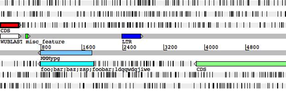
5.
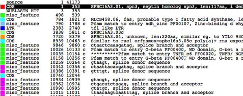
6.

Key:
1. The menus
for the main window (described later in this chapter).
2.
A one line summary of the current
selection (see the section called The Select Menu and
the
section
called
The Selection in Chapter 1 for more).
3.
This line contains one button for
each entry that has been loaded. These buttons allow the user to set the
default entry (see the section called The Default Entry in Chapter 1 )
and to set the active entries (see the section called The Active Entries
in Chapter 1
). For more detail on operating the buttons see the section
called The
Entry Button Line .
4.
This shows an overview of the
sequence and the features from the active entries. (see the section
called The Overview and DNA Views ).
5.
This is called the "DNA
view" to distinguish it from the overview, but in fact it operates in a
very similar way. (see the section called The Overview and DNA Views ).
6.
A textual summary of the active
features. (See the section called The Feature List ).
Most
of the items in this menu are used to read and write entries and parts of
entries, the exceptions are Clone and Close.
Show File Manager ...
This
will open the file manager, or if it is already open will bring it to the
foreground. Entries can be dragged from the file manager into the artemis main window and dropped. When dropped the entry is
then read in and displayed.
Read An Entry ...
Read
an entry (see the section called The "Entry"
in Chapter 1
), but keep it separate from the others. A new button
will be created on the entry button line for the new entry. The new entry will
be marked as active (see the section called The Active Entries
in Chapter 1
) and will be the new default entry (see the
section
called
The Default Entry in Chapter 1 ).
See
the
section called Sequence and Annotation File Formats in Chapter 1 . This function only reads the
feature section of the input file - the sequence (if any) is ignored.
Read Entry Into
Read
the features from an entry (see the section called The "Entry"
in Chapter 1
) chosen by the user and then insert them into the entry
selected by the user.
Read BAM / CRAM / VCF ...
Artemis can read in and visualise BAM, CRAM, VCF and BCF
files. These files need to be indexed as described below. Some examples can be
found here.
BAM files need to be sorted and indexed using SAMtools. The index file should be in the same directory as the BAM file. This provides an integrated BamView panel in Artemis, displaying sequence alignment mappings to a reference
sequence. Multiple BAM files can be loaded in from here either by selecting
each file individually or by selecting a file of path names to the BAM files.
The BAM files can be read from a local file system or remotely from an HTTP
server.
BamView will look to match
the length of the sequence in Artemis with the reference sequence lengths in
the BAM file header. It will display a warning when it opens if it finds a
matching reference sequence (from these lengths) and changes to displaying the
reads for that. The reference sequence for the mapped reads can be changed
manually in the drop down list in the toolbar at the top of the BamView.
In
the case when the reference sequences are concatenated together into one (e.g.
in a multiple FASTA sequence) and the sequence length matches the sum of
sequence lengths given in the header of the BAM, Artemis will try to match the
names (e.g. locus_tag or label) of the features (e.g.
contig or chromosome) against the reference sequence names in the BAM. It will
then adjust the read positions accordingly using the start position of the
feature.
When open the BamView can be configured via the popup menu which is
activated by clicking on the BamView panel. The
'View' menu allows the reads to be displayed in a number of views: stack,
strand-stack, paired-stack, inferred size and coverage.
In
Artemis the BamView display can be used to calculate
the number of reads mapped to the regions covered by selected features. In
addition the reads per kilobase per million mapped reads (RPKM) values for
selected features can be calculated on the fly. Note this calculation can take
a while to complete.
CRAM files can be
loaded in a similar fashion to BAMs. They can be created, sorted and indexed
using SAMtools.
Variant Call Format
(VCF) files can also be read. The VCF
files need to be compressed and indexed using bgzip
and tabix respectively (see the tabix manual and
download
page). The compressed file gets read in (e.g.
file.vcf.gz) and below are the commands for generating this from a VCF file:
bgzip
file.vcf
tabix
-p vcf file.vcf.gz
Alternatively
a Binary VCF (BCF)
can be indexed with BCFtools and read into Artemis or
ACT.
As
with reading in multiple BAM/CRAM files, it is possible to read a number of
(compressed and indexed) VCF files by listing their full paths in a single
file. They then get displayed in separate rows in the VCF panel.
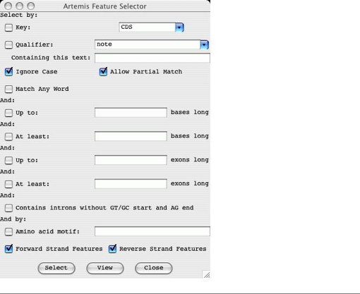
For single base changes the
colour represents the base it is being changed to, i.e. T black, G blue, A
green, C red. There are options available to filter the display by the
different types of variants. Right clicking on the VCF panel will display a
pop-up menu in which there is a 'Filter...' menu. This opens a window with
check
boxes for a number of variant types and properties that can be used to filter
on. This can be used to show and hide synonymous, non-synonymous, deletion
(grey), insertion (magenta), and multiple allele (orange line with a circle at
the top) variants. In this window there is a check box to hide the variants
that do not overlap CDS features. There is an option to mark variants that
introduce stop codons (into the CDS features) with a circle in the middle of
the line that represents the variant. There are also options to filter the
variants by various properties such as their quality score (QUAL) or their
depth across the samples (DP).
Placing
the mouse over a vertical line shows an overview of the variation as a tooltip.
Also right clicking over a line then gives an extra option in the pop-up menu
to show the details for that variation in a separate window. There are also
alternative colouring schemes. It is possible to colour the variants by whether
they are synonymous or non-synonymous or by their quality score (the lower the
quality the more faded the variant appears).
There
is an option to provide an overview of the variant types (e.g. synonymous,
non-synonymous, insertion, deletion) for selected features. Also, filtered data
can be exported in VCF format, or the reconstructed DNA sequences of variants
can be exported in FASTA format for selected features or regions for further
analyses. These sequences can be used as input for multiple sequence alignment
tools.
Save Default Entry
Save
the default entry to the file it came from, unless the entry has been given a
new name, in which case the entry is saved to a file with that name. If the
entry has no name, Artemis will prompt the user for a new name. [shortcut key:
S]
Save An Entry
This
item will do the same as "Save Default Entry" for the chosen entry.
Save An Entry As
This
sub-menu contains the less frequently used save functions.
New File
Ask
for the name of file to save the given entry to. The name of entry (as
displayed in the entry button line) will change to the new name.
EMBL Format
This
does the same as "Save An Entry As -> New File ...", but will
write the features and sequence of the entry in EMBL format. Note that
currently the header of a GENBANK entry can't be converted to the
equivalent EMBL header (it will be discarded instead).
GENBANK Format
This
does the same as "Save An Entry As -> New File ...", but will
write the features and sequence of the entry in GENBANK format. Note that
currently the header of a EMBL entry can't be converted to the equivalent
GENBANK header (it will be discarded instead).
Sequin Table Format
This
saves a file in Sequin
table format which
is used by Sequin.
GFF Format
Writes
the features in GFF format and sequence of the entry in FASTA format to a file
selected by the user. Note that if you use this function on an EMBL or GENBANK
entry the header will discarded.
EMBL Submission Format
This does the same
as "Save An Entry As -> EMBL Format ...", but will write an
entry/tab file that contains only valid EMBL qualifiers (see the section
called extra_qualifiers in Chapter 6 )
and valid EMBL keys (see the section called extra_keys
in Chapter 6
). It will also check that the start and stop codons of
each CDS are sensible, that no two features have the same key and location and
that all required EMBL qualifiers are present.
Save All Entries
This
acts like "Save Default Entry", but save all the entries.
Write
Amino Acids Of Selected Features
Prompt
for a file name and then write the translation of the bases of the selected
features to that file. The file is written in FASTA format.
PIR Database Of Selected Features
Prompt
for a file name and then write the translation of the bases of the selected
features to that file. The file is written in PIR format (similar to FASTA, but
with a * as the last line of each record).
Bases Of Selection
Prompt for a file
name and then write the bases of the selection to that file in the selected
format. If the selection consists of features (rather than a base range) then
the bases of each feature will be written to the file as a separate record. If
the selection is a range of bases, then those bases will be written.
Upstream Bases Of Selection
Prompt
for a number and a file name, then write that many bases upstream of each
selected feature to the file in the selected format. For example if the
selected feature has a location of "100..200",
then asking for 50 upstream will write the bases in the range 50 to 99. Writing
upstream bases of a feature on the complementary strand will work in the
expected way.
Downstream Bases Of Selection
Prompt
for a number and a file name, then write that many bases downstream of each
selected feature to the file in the selected format.
All Bases
Prompt
for a file name, then write the complete sequence to that file in the selected
format.
Codon Usage of Selected Features
Prompt
for a file name, then write a codon usage table for the selected features. The
file in written in the same format as the data at Kazusa codon usage
database site. In the output file each codon is followed
by it's occurrence count (per thousand) and it's
percentage occurrence. (See the section called Add Usage Plots ... to find out how to plot a usage graph).
Clone This Window
Make
a new main window with the same contents as the current window. All changes in
the old window
will
be reflected in the new window, and vice versa. The exception to this rule is
the selection (see the section called The Selection in Chapter 1 ), which is not shared
between the old and new window.
Save As Image Files (png/svg)
Print
out the contents of the current window. All or some of the window panels can be
selected for printing to an image file.
SVG (scalable vector
graphics) is an XML based vector image format. These images can be converted to
a raster image (e.g. png, tiff) at any resolution by
exporting it from applications such as Inkscape (http://inkscape.org/) or gimp
(http://www.gimp.org/). Therefore the SVG format can be useful for creating
publication quality figures.
The
other formats available (png, jpeg etc) and are
raster or bitmap images.
Print
This
option can be used to print the contents of the current window to a file as
PostScript or to a printer.
Print Preview
This
opens the print image in a preview window. This shows what the image will look
like when printed to a file.
Preferences
This
enables the user to define their own shortcut preferences.
Close
Close
this window.
The Entries Menu
The items in this menu are used
to change which entry is the default entry and which entries are active (see the section called The
"Entry" in Chapter 1 ).
At the bottom of the menu there is a toggle button for each entry which
controls whether the entry is active or not. These toggle buttons work in a
similar way the the buttons on the entry button line
(see the
section called The Entry Button Line
).
Here is a description of the other menu items:
Set Name Of Entry
Set
the name of an entry chosen from a sub-menu. The name of the entry is used as
the name of the file when the entry is saved.
Set Default Entry
Set
the default entry by choosing one of the entries from the sub-menu. (See the section called The
Default
Entry in Chapter 1 ).
Remove An Entry
Remove
an entry from Artemis by choosing one of the entries from the sub-menu. The
original file that this entry came from (if any) will not be removed.
Remove Active Entries
Remove
the entries that are currently active. (See the section called The Active Entries in Chapter 1 ).
Deactivate All Entries
Choosing this menu
item will deactivate all entries. (See the section called The Active Entries in Chapter
1.)
The Select Menu
The items in this
menu are used to modify the current selection (see the section called The Selection in
Chapter
1). Artemis shows a short
summary of the current selection at the top of the main window (see 2
for details)..
Feature Selector ...
Open
a new Feature Selector window. This window allows the user to choose which
features to select based on feature keys (see the section called EMBL/Genbank Feature Keys
in Chapter 1
), qualifier values (see the section called EMBL/Genbank Feature Qualifiers in Chapter 1 ) and amino acid motifs.
The
Select button will set the selection to the contain those features that match
the given key, qualifier and amino acid motif combination.
The
View button will create a new feature list (see the section called The Feature List ) containing only those
features that match the given key, qualifier and amino acid motif combination.
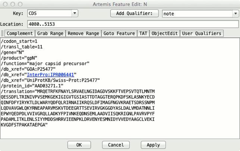
All
Reset
the selection so that nothing is selected then select all the features in the
active entries. [shortcut key: A]
All Bases
Reset
the selection so that nothing is selected then select all the bases in the
sequence.
Select All Features in Non-matching
Regions
Select
all features that have no corresponding match in ACT. This is used to highlight
regions that are different between sets of sequence. It will only take into
account matches that have not been filtered out using the score, identity or
length cut-off.
None
Clear
the selection so that nothing is selected. [shortcut key: N]
By Key
Ask
the user for a feature key, reset the selection so that nothing is selected,
then select all the features with the key given by the user.
CDS Features
Reset the selection
so that nothing is selected, then select all the CDS features that do not have
a /pseudo qualifier.
Same Key
Select
all the features that have the same key as any of the currently selected
features.
Open Reading Frame
Extend the current selection of
bases to cover complete open reading frames. Selecting a single base or codon
and then choosing this menu item has a similar effect to double clicking the
middle button on a base or residue (see the section called Changing the
Selection from a View Window for
details).
Features Overlapping Selection
Select
those (and only those) features that overlap the currently selected range of
bases or any of the currently selected features. The current selection will be
discarded.
Select
those (and only those) features that are fully contained by the currently
selected range of bases or any of the currently selected features. The current
selection will be discarded.
Base Range ...
Ask
the user for a range of bases, then select those bases. The range should look
something like this:
100-200, complement(100..200), 100.200 or
100..200. If the first number is larger than the second the bases will be selected on
the forward strand, otherwise they will be selected on the reverse strand
(unless there is a complement
around the range, in which case the sense is reversed).
Feature AA Range ...
Ask
the user for a range of amino acids in the selected feature and select those
bases. The range should look something like this: 100-200, or 100..200.
Toggle Selection
Invert the selection
- after choosing this menu item the selection will contain only those features
that were not in the selection beforehand.
The View Menu
Selected Features
Open
a view window for each selected feature showing it's feature table entry.
[shortcut key: V]
Selection
Open
a view window that will show the current selection. The window is updated as
the selection changes, so it can be left open.
When
one feature is selected the window will show the text (EMBL, GenBank or GFF
format) of the feature, the base composition, GC percentage, correlation score
(see the section
called Correlation Scores), and the bases and translation
of the sequence of the feature.
When
two or more features are selected the window will show the text (EMBL, GenBank
or GFF format) of the features, the base composition, average GC percentage,
average correlation score, minimum/maximum GC content and minimum/maximum
correlation score of the feature sequence.
When
a range of bases is selected the window will show the base composition, GC
content percentage and the bases and translation of the sequence of the
feature.
Search Results
On
this sub-menu allows the user to view the results of feature searches that are
launched from the run menu in Artemis (see the section called The Run Menu ).
CDS Genes And Products
Pop
up a feature list (see the section called The Feature List )
of the CDS showing the gene names (from the /gene qualifier) and the product
(from the /product qualifier). This list includes pseudo genes.
Feature Filters
Each of the items in
this sub-menu each allow the user to view a subset of the active features. An
example of a subset is all those features with misc_feature as a key. The
features are displayed in a new window that contains a menu bar with possible
actions to apply to the subset, and feature list (see the
section
called
The Feature List ). Most of the
possible actions will apply only to the features in the list. For example "Show
Overview" in the View menu (see the section called Overview ) will include statistics only on the features in the list.
Suspicious Start Codons ...
Show
those CDS features that have a suspicious start codon. ie.
the first codon of the feature isn't ATG (in eukaroytic
mode) or ATG, GTG and TTG (in prokaryotic mode). This function is effected by
the setting of the "Eukaroytic Mode" option
in the main options menu (see the section called Genetic Code Tables
in Chapter 2 for more).
Suspicious Stop Codons ...
Show
those CDS features that have a suspicious stop codon. ie.
the last codon of the feature isn't one of TAA, TAG or TGA.
Non EMBL Keys ...
Show
those features that have a key that isn't valid for EMBL/GenBank entries.
Duplicated Features ...
Show
those features that are duplicated (ie. features that
have the same key and location as another feature). These sort of duplicates
aren't allowed by the EMBL database.
Overlapping CDS Features ...
Show
those CDS features that overlap another CDS feature (on either strand).
Features Missing Required Qualifiers ...
Show
those features that are missing a qualifier that is required by the EMBL
database.
Filter By Key ...
Show
those features that have a key chosen by the user.
Selected Features ...
Show the currently selected
features in a new feature list. The contents of the list will remain the same
even if selection subsequently changes. This is useful for bookmarking a
collection of features for later use.
Overview
Open a new window
the will show a summary of the active entries and some statistics about the
sequence (such as the GC content). [shortcut key: O]
Sequence Statistics
The
overview window show the following statistics about the sequence:
•
Number of bases.
•
The number of each nucleotide in the sequence.
• GC
percentage of non-ambiguous bases - ie. the GC
content percentage ignoring bases other than A,T,C and G. This should be the
same as the "GC percentage" above.
Feature Statistics
The
overview window also shows the following statistics about the features in the
active entries (if there are any features). Note that the "genes" are
the non-pseudo CDS features.
• Number of
features in the active entries (see the section called The Active Entries
in Chapter 1
).
•
Gene density - the average number of non-pseudo CDS features
per 1000 bases.
•
Average gene length - the average length of non-pseudo CDS
features (not including introns).
•
Number of non-spliced genes.
•
Number of spliced genes.
•
Number of pseudo genes (ie. CDS
features with a /pseudo qualifier).
•
Protein coding (CDS) features.
•
Protein coding (CDS) bases.
•
Protein coding percentage - ie.
the number of coding bases excluding introns.
•
Coding percentage (including introns).
•
A summary of the number of features of each key (type) and
their colours.
Forward Strand Overview
Open
a new window the will show a summary of the features and bases of the forward
strand.
Reverse Strand Overview
Open
a new window the will show a summary of the features and bases of the reverse
strand.
Create
a view window for each selected feature, which shows bases of the feature.
Feature Bases As FASTA
Create
a view window for each selected feature, which shows bases of the feature in
FASTA format.
Feature Amino Acids
Create
a view window for each selected feature, which shows amino acids of the
feature.
Feature Amino Acids As FASTA
Create
a view window for each selected feature, which shows amino acids of the feature
in FASTA format.
Feature Statistics
Show
some statistics about each selected feature. On the left on the feature
information window is the amino acid composition of the feature. On the right
is the codon composition of the feature.
Feature Plots
Open a window for
each selected feature that shows a plot of the Kyte-Doolittle
Hydrophobicity [short name: hydrophobicity],
the Hopp-Woods Hydrophilicity [short name: hydrophilicity], and an approximation of the
GCG Coiled Coils algorithm [short name: coiled_coil]. (For more detail
about the coiled coils algorithm see "Predicting Coiled Coils from Protein
Sequences", Science Vol. 252 page 1162.) [shortcut key: W]
Some
general information about graphs and plots in Artemis can be found in the section
called Graphs
and
Plots. Configuration options
for graphs are described in the section
called Options For Plots and Graphs in Chapter 6 .
The Goto Menu
The
items in this menu allow the user to navigate around the sequence and features.
Open
a new navigation window. [shortcut key: G]
This
window allows the user to perform five different tasks:
1.
Scroll all the views so that a
particular base is in the centre of the display . To
use this function, type a base position into the box to the right of the
"Goto Base:" label then press the goto button at the bottom of the window. The requested base
will be selected and then the overview display and the DNA display will scroll
so that the base is as near as possible to the middle of the main window.
2.
Find the next feature that has
the given gene name . To use this function, type a
gene name into the box to the right of the "Goto
Feature With This Gene Name:" label and then press the goto
button. Artemis will select the first feature with the given text in any of it's qualifiers and will then scroll the display so that
feature is in view.
3.
Find the next feature that has a
qualifier containing a particular string . To use this
function, type a string into the box to the right of the "Goto Feature With This Qualifier Value:" label and
then press the goto button. Artemis will select the
first feature with the given string in any of it's
qualifier values (see the section called EMBL/Genbank Feature Qualifiers in Chapter 1 ) and will then scroll the
display so that feature is in view.
4.
Find the next feature that has
a particular key . To use this function, type a key
into the box to the right of the "Goto
Feature With This Key:" label and then press the goto
button. Artemis will select the first feature with the given key and will then
scroll the display so that feature is in view.
5.
Find the next occurrence of a
particular base pattern in the sequence . To use this
function, type a base pattern into the box to the right of the
"Find Base Pattern:" label and then press the goto
button. Artemis will select the first contiguous group of bases on either
strand that match the given base pattern and will then scroll the display so
that those bases are in view. Any IUB base code can be used in the pattern, so
for example searching for aanntt
will match any six bases that start with "aa" and ends with "tt". See Table 3-1 for
a list of the available base codes.
6.
Find the next occurrence of a
particular residue pattern in the sequence . To use this
function, type a amino acid pattern into the
box to the right of the "Goto Amino Acid
String:" label and then press the goto button.
Artemis will select the first contiguous group of bases on either strand that
translate to the given amino acids and will then scroll the display so that
those bases are in view. The letter 'X' can be used as an ambiguity code, hence
'AAXXXDD' will match 'AALRTDD' or 'AATTTDD' etc.
Note
that for all the functions above except the first ("Goto
Base"), if the "Start search at beginning" option is set or if
there is nothing selected the search will start at the beginning of the
sequence. Otherwise the search will start at the selected base or feature. This
means that the user can step through the matching bases or features by pressing
the goto button repeatedly.
If
the "Ignore Case" toggle is on (which is the default) Artemis will
ignore the difference between upper and lower case letters when searching for a
gene name, a qualifier value or a feature key.
The
"Allow Substring Matches" toggle affects 2
and 3. If on Artemis will search for
qualifier values that contain the given characters. For example searching for
the genename CDC will find CDC1, CDC2, ABCDC etc. If
the toggle is off Artemis will only find exact matches, so searching for the
gene CDC will only find features that have /gene="CDC"
not /gene="CDC11".
Start of Selection
Scroll all the views
so that the first base of the selection is as close to the centre as possible.
If the a range of bases is selected the views will move to the first base of
the range. If one or more features are selected, then the first base of the first
selected feature will be centred. Otherwise, if one or more segments (see the
section
called
Feature Segments in Chapter 1 ) is selected then the first
base of the first selected segment will be centred. [shortcut key: control-left]
End of Selection
This
does the same as "Goto Start of Selection",
but uses the last base of the selected range or the last base of the last
selected feature or segment. [shortcut key: control-right]
Feature Start
Scroll
the views to the start of the first selected feature.
Feature End
Scroll
the views to the end of the first selected feature.
Start of Sequence
Scroll
the views so that the start of the sequence is visible. [shortcut key: control-up]
End of Sequence
Scroll
the views so that the end of the sequence is visible. [shortcut key:
control-down]
Feature Base Position ...
Ask
the user for a base position within the first selected feature, then scroll the
views so that the base position is centred.
Ask the user for an
amino acid position within the first selected feature, then scroll the views so
that that position is centred.
This menu contains
most of the functions that change the entries. Note that the changes will not
be saved back to the original files until one of the save functions in the File
menu is used (see the section called Save An Entry).
Undo
This
function will undo the last change that was made using the Edit or Create
menus. Up to 20 changes can be undone. This menu item is only enabled when
there is something to undo. This limit can be changed in the options file (see the section
called undo_levels in Chapter 6 ).
[shortcut key: U]
Redo
This
function will redo the last undo operation.
Selected Features in Editor
Open
an edit window for each selected feature. [shortcut key: E]

From
the top down the edit window has these parts:
1.
At the top left is a selector for
choosing the key of the feature. This only contains a subset of the legal keys.
The subset can be changed by changing the common_keys option in the
options file (see the section called common_keys
in Chapter 6
).
At
the top right of the edit window is a selector for adding a qualifier. For
example choosing note from
the menu will insert
/note="" into the qualifier edit area.
2.
Just below the key and qualifier selector
is the location entry field. Artemis understands most of the EMBL location
syntax, including joins, complements, ranges with non-exact ends (eg.
(100.200)..>350) and references to
other entries (eg.
join(100..200,SPB23A1:100..200)).
3. Below the location
is a row of buttons:
•
The Complement button will complement the
contents of the location field.
•
The Grab Range button will grab the
currently selected range into the location field.
• The
Remove Range
button will remove the selected bases from the location string. This is
normally used to create an intron in a feature.
•
Pressing the Goto Feature button has the same effect as the
"Start of Selection" item in the "Goto"
menu. (See the section called Start of Selection
for more).
•
The User
Qualifiers button opens a tool for maintaining user defined lists of
qualifiers (i.e. qualifiers in the form tag = value pairs on separate lines)
and the option to read qualifiers from OBO formatted files or URLs. In the
intial screen (see below) you are invited to import
your qualifier list from the import options in the "File" menu. These
lists can be optionally saved between sessions in the file '.artemis.qualifiers' in the home directory.
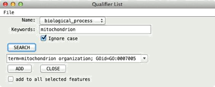
When
a qualifier list or OBO file has been added then it is possible to search for
keywords within a list. The qualifier selected in the drop down list (under the
SEARCH button) can then be added to the current feature annotation or added to
selected features in Artemis. If the keywords text field is left blank then all
qualifiers are available from the drop down list of qualifier values.

4.
The centre of the edit window
contains the qualifier entry section. The qualifiers should be entered in same
way they appear in the feature table part of an EMBL entry, but without the
leading FT and spaces.
5.
The bottom of the window contains
three buttons. The OK
button will update the feature with the changes that have been made by the user
and will then close the edit window. The Cancel
button will discard the changes and then close the window. The Apply will make the changes, but will not
close the window. Before any changes are made the location and the qualifiers
are checked for formatting errors. Any errors will brought to the attention of
the user through the use of annoying pop-up boxes. No changes will be performed
until there all errors have been fixed.
Subsequence (and Features)
Make
a copy (in a new edit window) of the selected bases and the features in that
range. Any features that overlap the end of the range will be truncated.
Find Or Replace Qualifier Text
This
opens a search window with options to find or replace qualifier text. The
search can be restricted to features with a given key and/or it can be
restricted to a given qualifier name.
Boolean
operators (and/or) can be used in the search. Clicking on the Show Boolean Search Options displays 4 options.
1.
The Use
boolean operators (and, or, & |)
means that it uses any of these operators that are in the Find text field.
2.
The Match
any string (i.e. x OR y) means that the words in the Find text field will be separated by an
OR condition. So that it finds those features with qulaifiers
that contain any of the words.
3.
The Match
all string (i.e. x AND y) means that the words in the Find text field will be separated by an
AND condition. So that it finds those features with qulaifiers
that contain all of the words.
4. The No
boolean search option is the default. This means
it searches for those features with
qualifiers
that contain the complete text from the Find text field.
In
addition selecting the Duplicate Qualifiers tab provides options to search for
or delete duplicate qualifiers.
Qualifier(s) of Selected Feature
Change ...
This
function allows the user to add or change qualifiers on all the selected
features in one operation. The main part of the window acts like the qualifier
editing field of the feature edit window (see the section called Selected Features in Editor ).
Remove ...
This
function allows the user to remove all qualifiers with a particular name from
all the selected features.
Convert ...
This
function allows the user to convert all qualifiers of a particular type to
another qualifier for all the selected features.
Selected Feature(s)
Duplicate
Make
a copy of each selected feature. Each new feature will be added just after the
original in the same entry as the original. [shortcut key: D]
Merge
Create
a new feature that contains all the exons and qualifiers of the selected
features. The selected features must all have the same key. [shortcut key: M]
Unmerge
If
the selection contains exactly two exons and those exons are adjacent in the
same feature, split the
feature into two pieces between the exons. The original
feature is truncated and a new feature is created.
The
qualifiers of the old feature are copied to new feature.
Unmerge All Segments
All
exons in a feature are unmerged.
Delete
Remove
each selected feature from its entry. [shortcut key: control-delete]
Delete Exons
Delete
the selected exons. The last exon of a feature can't be deleted (delete the
whole feature instead).
Remove Introns
Delete
the selected introns.
Move Selected Features To
Move
the selected features to another entry. Choose the destination entry from the
sub-menu.
Copy Selected Features To
Copy
the selected features to another entry. Choose the destination entry from the
sub-menu.
Trim Selected Features
To Met
For each of the
selected features this function will attempt to move the start position to the
first ATG in the feature if the feature does not already start on a ATG codon.
If there is no ATG in the first thirty percent of the bases of the feature the
start position will be unchanged. The search will stop at the end of the first
segment of a multi-segment feature.
To Any
This
works in the same way as "Trim Selected Features To Met",
but will attempt to move the start position of the feature to the first TTG,
ATG or GTG in the feature if it does not already start on one of those codons.
As above it will only search the first thirty percent of the feature bases and
will only search the first segment of a multi-segment feature.
To Next Met
For
each of the selected features this function will attempt to move the start
position to the next ATG in the feature (the first codon is skipped). If there
is no ATG in the first thirty percent of the bases of the feature the start
position will be unchanged. The search will stop at the end of the first
segment of a multi-segment feature. [shortcut key: T]
To Next Any
This
works in the same way as "Trim Selected Features To Next Met", but
will attempt to move the start position of the feature to the next TTG, ATG or
GTG in the feature (the first codon is skipped). As above it will only search
the first thirty percent of the feature bases and will only search the first
segment of a multi-segment feature. [shortcut key: Y]
Extend Selected Features
To Previous Stop Codon
Extend each of the
selected features which do not start on a stop codon so that each feature
starts just after the previous stop codon in this reading frame. [shortcut key:
Q]
To Next Stop Codon
Extend
each of the selected features which do not end on a stop codon so that each
feature ends just before the next stop codon in this reading frame.
To Next Stop Codon and Fix
Same
as above but in addition this fixes the stop codons.
Check
and fix the stop codons to all the selected features. For each feature if the
last codon is a stop codon, then all is well, nothing further is done to the
feature. If the last codon is not a stop codon, but the very next codon is a
stop codon, then the end of the feature is moved forward by three bases. If
both the last codon and the very next codon after the feature are not stop
codons, the feature is selected, an error message is displayed and processing
stops immediately.
Automatically Create Gene Names
Ask
for a gene name prefix (using a text requester), and then give a unique gene
name to each CDS
feature
in the active entries using that prefix. For example if there are four CDS
features with locations:
"1..500",
"complement(100..600)",
"200..700" and "complement(300..800)",
entering
SPBC16A3 will give the four features
these names: SPBC16A3.01,
SPBC16A3.02c,
SPBC16A3.03
and SPBC16A3.04c.
Fix Gene Names
For
each selected CDS, add the gene name from the CDS to neighbouring/overlapping
mRNA, intron, exon, gene, 5'UTR and 3'UTR features. Warn about inconsistencies
such as overlapping CDSs.
Bases
Reverse And Complement
Reverse
and complement the sequence and all the features in all the entries (active and
inactive).
Reverse And Complement Selected Contig
Reverse
and complement the sequence and all the features in a selected contig feature.
If this option is used in ACT then all the matches within the contig are also
reversed. Any matches extending past the boundary of the contig are deleted.
The changes to the comparison file can be saved by right clicking in the
comparison window and selecting "Save Comparison File...". However,
ideally the comparison between the two sequences should be recalculated.
Delete Selected Bases
Deletes the selected
range of bases (if any) from both strands. The deletion will not proceed if the
selected range overlaps any features.
Prompt the user for some bases
to insert just before the selected bases. The operation will not proceed if
there is no selected range, but bases can be inserted anywhere in the sequence,
including inside a feature. The same bases, reversed and complemented, will be
inserted at the corresponding place on the opposite strand.
Add Bases From File ...
Prompt
the user for the name of a file containing the bases to insert just before the
selected bases.
Replace Bases At Selection
Prompt
the user for some bases to replace the selected bases.
Contig Reordering ...
Opens a 'Contig Tool' displaying contigs, i.e. with feature
keys 'fasta_record' or 'contig'. The former being
created automatically for each sequence when a multiple fasta
sequence file is read in. The contigs in this tool can then individually be
selected and dragged and dropped to another location. In this way the order of
contigs and features within a contig can be changed.
If
this is used in ACT then the matches are also reordered with respect to the
change in the sequence. If a match spans the boundary of a contig that is being
moved then if possible it is split. In some situations where there is a match
with 'indels' then this is not possible and the match is deleted. The changes
to the comparison file can be saved by right clicking in the comparison window
and selecting "Save Comparison File...". However, ideally the
comparison between the two sequences should be recalculated.
Header Of Default Entry
Open
a edit window containing the header of the default entry. Changes made in the
edit window will be applied immediately to the entry provided there are no
errors in the formatting of the header.
The Create Menu
This
menu contains functions for creating new features (see the section called EMBL/Genbank Features in Chapter 1) or entries (see the section called The
"Entry" in Chapter 1 ).
Create a new feature
in the default entry with a key of "misc_feature"
(see the
section called EMBL/Genbank
Feature Keys in Chapter 1 ), a location of that
spans the whole sequence and which has no qualifiers (see the section called EMBL/Genbank Feature Qualifiers in Chapter 1 ).
Feature From Base Range
Create a new feature in the
default entry with a key of "misc_feature",
no qualifiers and a location that exactly matches the selected range of bases.
If no bases are selected an error will be reported. [shortcut key: C]
Intergenic Features
Create
new features between CDS features in the default entry all with the "misc_feature" key.
Features From Non-matching Regions
Create
features in ACT spanning all the regions where a match is not to be found.
New Entry
Create
a new entry with no name and no features. The new entry will become the default
entry (see the section called The Default Entry in Chapter 1 ).
Mark Open Reading Frames ...
Create
a feature for each "large" open reading frame in the sequence. The
default minimum size of a "large" open reading frame can be changed
by changing the minimum_orf_size
option (see the section called minimum_orf_size in Chapter 6 ). If a codon usage file (see
the section called Add
Usage Plots ...) has been read each new ORF will have a codon usage score
added as a /score qualifier. The new features can then be filtered from the display (see
"Set Score Cutoffs ..." in the section
called The Pop-up Menu).
Mark Empty ORFs ...
Create
a feature for each open reading frame that doesn't already contain a feature.
Mark Open
Reading Frames In Range ...
Create
a feature for each "large" open reading frame in a range of bases. A
range must be selected before using this command.
Mark From Pattern ...
Open
a text requester to ask the user for a base pattern, then create a feature for
each group of bases that matches that pattern. A new entry will be created to
hold the features with the name "matches: <pattern>", where
<pattern> is the pattern that was entered be the user. Any IUB base code
can be used in the pattern, so for example, aanntt
will match any six bases that start with "aa" and ends with "tt".
Table 3-1. IUB Base Codes
|
|
|
|
|
|
|
|
|
|
|
R = A or G |
|
S = G or C |
|
B = C, G
or T |
|
|
|
|
|
|
|
|
|
|
|
|
|
|
|
|
|
|
|
|
|
|
Y = C or T |
|
W = A or T |
|
D = A, G
or T |
|
|
|
|
|
|
|
|
|
|
|
|
|
|
|
|
|
|
|
|
|
|
K = G or T |
|
N = A, C,
G or T |
|
H = A, C
or T |
|
|
|
|
|
|
|
|
|
|
|
|
|
|
|
|
|
|
|
|
|
|
M = A or C |
|
|
|
V = A, C
or G |
|
|
|
|
|
|
|
|
|
|
|
|
|
|
|
|
|
|
|
|
|
|
|
|
|
|
|
|
|
|
|
|
|
|
|
|
|
|
Mark Ambiguities
Create
a new feature for each block of ambiguous bases. The new features will have a
key of misc_feature and will created in a new entry
called "ambiguous bases".
This
menu is primarily used for running external programs on UNIX. Additionally
there are menu options to send sequences from selected features to the NCBI web BLAST, Pfam and
Rfam.
Once
configured correctly, running an external program should be as simple as
selecting some features of interest, then choosing one of the items from the
run menu. When the external programs finishes the results can viewed using the
"Search Results" item in the View menu (see the section
called Search
Results).
Configuring the Run Menu
To use this feature the run_blastp,
run_fasta
etc. scripts that are supplied with Artemis will need to be changed to reflect
the paths and databases that are configured at each site. Note that the run scripts are stored in the etc/ directory.
Each
external program that is listed in the options file (see the section
called
feature_dna_programs in Chapter 6 and the section called feature_protein_programs in Chapter 6) gets a "run" menu item and a "set
options" menu item. For each external program (such as blastp) there must be a shell script available that sets any necessary
environment variables and then launches the search/analysis program (for blastp the script is called run_blastp).
Taking
blastp as an example, this is the sequence of events
that occurs when the user selects the "Run blastp
on selected features" menu item:
1. Artemis
creates a new directory in the current directory called blastp.
2.
A protein FASTA sequence file is
written in the new directory for each selected feature. (For a DNA search
program such as blastn the file will be a DNA FASTA
file). The sequence file name will be something like: blastp/features.tab.seq.00001.
3.
The name of the expected output file
is stored in the feature in a qualifier called /blastp_file. If the entry is called features.tab then
the qualifier will be set to something
like: /blastp_file="blastp/features.tab.seq.00001.out".
Note that because the file name is stored in the entry you will need to save
the entry to keep the association between the features and the output files.
4.
A file is then written (called
something like blastp/file_of_filenames.1) that contains the
names of all the newly created sequence files in the blastp
directory.
5.
Artemis then tries to read the run_blastp
script from the Artemis installation directory. The script is executed like
this:
run_blastp
blastp/file_of_filenames.1 [options]
where [options]
currently must be a single word (normally a database to search). In the case of
blastp/blastn/fasta etc. the second argument of the script is passed
directly to the blast/fasta as the database name. For
testing purposes it is possible to run run_blastp on the command line
with the same arguments as above.
run_blastp
will
run blastp on each of the sequence files listed in
file_of_filenames.blastp
and
save the output in the corresponding .out file.
6.
If the program is successfully
started, control will immediately return to the user. When run_blastp finishes a message will be displayed
to alert the user.
If
necessary, it is possible to exit once Artemis indicates that the external
program has been started and the entry has been saved. run_blastp
will keep running in the background.
The Graph Menu
Some
general information about the graphs can be found in the section called Graphs and Plots . Configuration options for
graphs are described in the section called Options For Plots and Graphs in
Chapter
6.
Hide All Graphs
This item will turn off all the
visible graphs.
Add Usage Plots ...
This menu
item prompts the user for the name of a file which should contain codon usage
data in the same format as the data at this web site.
If Artemis successfully loads the codon usage file two new plots will be added
to the display menu and will be immediately visible. One plot shows the codon
scores (in a sliding window) for each of the forward reading frames and the
other shows the same thing for the reverse reading frames. [short name: codon_usage]
The
graph is calculated using the codon preference statistic from Gribskov et al. (Nucl. Acids Res. 12;
539-549 (1984)).
Here is an example usage file:
UUU 32.2( 48423)
UCU 30.5( 45913) UAU 21.8(
32829) UGU 8.9( 13371)
UUC 13.0( 19519)
UCC 12.1( 18149) UAC 11.8(
17721) UGC 5.6(
8372)
UUA 26.0( 39138)
UCA 17.9( 26850) UAA 1.3(
1944) UGA 0.5(
733)
UUG 24.0( 36134)
UCG 8.0( 12055) UAG
0.5( 705) UGG 10.9( 16364)
CUU 25.3( 38015)
CCU 21.9( 32964) CAU 16.3(
24577) CGU 16.3( 24495)
CUC 7.3( 10922) CCC
8.4( 12619) CAC 6.4(
9653) CGC 6.2(
9316)
CUA 8.6(
12957) CCA 12.7( 19075) CAA 27.3( 41066) CGA
7.9( 11896)
CUG
6.3( 9503) CCG
4.6( 6910) CAG 10.9( 16457) CGG
3.0( 4487)
AUU 35.0( 52636)
ACU 22.9( 34419) AAU 33.9( 51009)
AGU 14.7( 22108)
AUC 12.6( 19000)
ACC 10.9( 16378) AAC 17.9(
26895) AGC 9.2( 13905)
AUA 13.1( 19726)
ACA 13.9( 20898) AAA 39.3(
59079) AGA 11.1( 16742)
AUG 20.9( 31376)
ACG 6.5( 9744)
AAG 25.2( 37825) AGG 5.1(
7615)
GUU 29.3( 44015)
GCU 30.2( 45397) GAU 38.1(
57240) GGU 22.0( 33101)
GUC 11.0( 16497)
GCC 11.6( 17518) GAC 15.8(
23749) GGC 8.5( 12717)
GUA 12.3( 18451)
GCA 15.7( 23649) GAA 44.3(
66550) GGA 15.7( 23623)
GUG 8.3(
12422) GCG 5.3(
8011) GAG 21.3( 31979) GGG
4.3( 6497)
Add User Plot ...
Artemis
is able to display some types of user data in a graph that looks like the GC
content graph (see the section called GC Content (%) ). This menu item will prompt the user for the name of a
data file which should
contain one of the following possible graph file formats:
1.
one line per base and one or more
columns of integer or floating point values per line. The number of lines
should match the number of bases in the sequence. Artemis will plot each data
point for the corresponding base. Each column represents a data set for a line.
Example extract:
21.4 1910.7
44
1126.1
1911.7 0
0 0
0 1782.0
1937.5 65.4
...
2.
the first column corresponds to the
base position and is an integer. Note to distinguish this format from the
previous format the first line of the file must start with a '#'. Line colours
can be specified in the header using the keyword colour followed by space
separated R:G:B values for each line. The next rows(s) are the data values.
Example extract:
|
# BASE |
VAL1 |
|
VAL2 |
VAL3 |
|
VAL4 |
VAL5 |
VAL6 |
|
|
|
# colour 5:150:55 255:0:0 |
0:255:0 0:0:255 100:100:100 50:150:50 |
|||||||||
|
176 |
2204.8 |
848.23 |
0 |
|
0 |
0 |
536.04 |
|||
|
278 |
804.99 |
|
0 |
|
837.2 |
0 |
681.63 |
0 |
||
|
452 |
0 |
699.98 |
0 |
|
0 |
|
0 |
251.18 |
|
|
|
553 |
0 |
0 |
|
0 |
|
0 |
|
0 |
52.4 |
|
|
654 |
0 |
0 |
|
0 |
|
0 |
|
334.2 |
0 |
|
|
686 |
0 |
0 |
|
652.78 |
0 |
|
0 |
0 |
|
|
|
831 |
0 |
0 |
|
0 |
|
0 |
|
0 |
67.97 |
|
|
... |
|
|
|
|
|
|
|
|
|
|
3.
indexed tab delimited file. For this
tabix is used (see the tabix manual)
to create an index. This is especially useful for large data sets as it is
memory efficient and only reads the data corresponding to the visible region in
Artemis. The first columns contain the sequence name and base position and this
is then followed by the values to be plotted.
For
example 'file.plot' is a tab delimited file with
column 1 containing the sequence name and column 2 the positions, this is
sorted and then indexed with tabix:
(grep
^"#" file.plot; grep -v ^"#" file.plot | sort -k1,1 -k2,2n) | bgzip
> sorted.plot.gz
;
tabix
-s 1 -b 2 -e 2 sorted.plot.gz
Example extract:
|
foo |
1 |
5 |
5 |
129 |
5 |
5 |
239 |
|
foo |
2 |
1 |
10 |
124 |
12 |
10 |
234 |
|
foo |
3 |
5 |
16 |
129 |
12 |
15 |
229 |
|
foo |
4 |
0 |
23 |
124 |
20 |
20 |
414 |
|
foo |
5 |
5 |
22 |
121 |
28 |
25 |
419 |
|
foo |
6 |
30 |
36 |
124 |
32 |
30 |
412 |
|
... |
|
|
|
|
|
|
|
Indexed
user plots can be used with indexed FASTA sequences and indexed GFF files (see the
section
called
Sequence and Annotation File Formats in Chapter 1 ). The sequence can then be changed using the drop down menu in the Entry toolbar and
this will change the graph data to the selected sequence.
4.
the next two formats are types of Wiggle formats. The first is variableStep. Note that Artemis only supports the colour
element in the track line.
track
type=wiggle_0 color=255,200,0
variableStep
chrom=chr19 span=10
310 1
320 12
330 18
340 6
350 5
430 3
440 1
Right
clicking on the graph and selecting the 'Configure...' option will display the
'Plot style' option for wiggle plots. The plots can be displayed as histograms
or as a heat map.
5.
the next format supported by Artemis is fixedStep
and is again a Wiggle format.
track
type=wiggle_0 name="fixedStep"
description="fixedStep format"
visibility=full autoScale=off viewLimits=0:1000
color=0,200,100 maxHeightPixels=100:50:20
graphType=points priority=20 fixedStep
chrom=chr19 start=7401 step=300 span=200
1000
900
800
700
600
500
400
300
200
100
6.
Blast tabular format. The blastall command must be run with the -m 8 flag which
generates one line of information per HSP. Alternatively the MSPcrunch file format can be read in as a graph file
format. Artemis will prompt the user to determine whether it uses the query or
subject coordinates to plot the graph.
When
a file is prompted for there is an option which if selected will mean the log
transform is plotted.
GC Content (%)
Controls whether the GC content
plot is visible. This is a graph of the average GC content of a moving window
(default size 120 base), across the bases visible in the overview window.
[Default: off] [short name: gc_content]
GC Content (%) With 2.5 SD Cutoff
Controls
whether the cutoff GC content plot is visible. This
is similar to the GC content graph, but the
plot
is clipped so that the GC content of each algorithm window is shown only when
it is more than 2.5 times the standard deviation of the GC content in all the
windows. [Default: off] [short name: sd_gc_content]
AG Content (%)
Controls whether the AG content
plot is visible. This is a graph of the average AG content of a moving window
(default size 120 base), across the bases visible in the overview window.
[Default: off] [short name: ag_content]
GC Frame Plot
Controls
whether the GC frame plot is visible. This graph is similar to the GC content
graph but shows the GC content of the first, second and third position
independently. For more information on the algorithm and on how to interpret
the result see this
web page.
See
Ishikawa,
J. and Hotta, K. FEMS Microbiol.
Lett. 174:251-253 (1999) for more information on the
algorithm.
[Default:
off] [short name: gc_frame]
Correlation Scores
Controls whether the
(forward) correlation scores plot is visible. The graph shows the correlation
between the amino acid composition of the globular proteins in TREMBL and the
composition of the base translation in each of the three reading frames. The green
line represents forward frame 1, blue represents frame 2 and red represents
frame 3. [Default: off] [short name: correlation_score]
Reverse Correlation Scores
This
does the same as "Correlation Scores", but does the calculation on
the reverse strand. The green line represents reverse frame 1 (the bottom frame
line), blue represents frame 2 and red represents frame 3. [Default: off]
[short name: correlation_score]
GC Deviation (G-C)/(G+C)
Controls
whether the GC deviation plot is visible. This graph shows the difference
between the "G" content of the forward strand and the reverse strand.
See
"Asymmetric substitution patterns in the two DNA strands of bacteria"
Lobry JR. - Mol
Biol Evol
1996 May;13(5):660-5.
[Default: off] [short name: gc_deviation]
AT Deviation (A-T)/(A+T)
Controls
whether the AT deviation plot is visible. This graph shows the difference
between the "A" content of the forward strand and the reverse strand.
[Default: off] [short name: at_deviation]
Karlin Signature
Difference
This menu item
toggles the display of the graph of the dinucleotide absolute relative
abundance difference between the whole sequence and a sliding window.
For
details of the algorithm see "Global dinucleotide signatures and analysis
of genomic heterogeneity" Samuel Karlin - Current Opinion in Microbiology 1998, 1:598-610.
[Default:
off] [short name: karlin_sig]
Cumulative AT Skew and Cumulative GC Skew
AT
skew is calculated as ([A]-[T])/([A]+[T]), where [A] and [T] are the counts of
these bases in the window. Grigoriev A (1999) Strand-specific compositional asymmetries in double-stranded
DNA viruses. Virus Research 60, 1-19.
Positional Asymmetry
Shulman
MJ, Steinberg CM, Westmoreland N (1981) The coding function of nucleotide sequences can be
discerned by statistical analysis. J Theor
Biol 88:409-20.
Informational Entropy
Konopka
Andrzej (1984) Is the information content of DNA evolutionarily
significant? J Theor Biol
107:697-704. Informational entropy is
calculated from a table of overlapping DNA triplet frequencies, using equation 1 in the
above reference. The use of overlapping triplets smooths the frame effect.
Scaled Chi Square
Shields
DC, Sharp PM (1987) Synonymous codon usage in Bacillus subtilis reflects both
translational selection and mutational biases. Nucleic Acids Res
15:8023-40.
Gatherer
D, McEwan NR (1997) Small regions of preferential codon usage and their effect
on overall codon bias--the case of the plp
gene. Biochem Mol Biol Int 43:107-14.
Effective Codon Number
Wright F (1990) The 'effective number of codons' used in a gene. Gene
87:23-9, and Fuglsang A (2004) The 'effective number of codons' revisited. Biochem Biophys Res Commun. May 7;317(3):957-64.
Intrinsic Codon Deviation Index
Freire-Picos MA, Gonzalez-Siso MI,
Rodriguez-Belmonte E, Rodriguez-Torres AM, Ramil E, Cerdan ME (1994) Codon usage in Kluyveromyces
lactis and in yeast cytochrome c-encoding genes. Gene 139:43-9.
The Display Menu
The
buttons in this menu are toggles controlling which parts of the Artemis display
are visible. All the buttons default to on/active.
Show Entry Buttons
This
toggle controls whether the entry button line is visible. (see the section
called The
Entry Button Line). [Default: on]
Show Base View
This
toggle controls whether the base view is visible. (see the section
called The
Overview and DNA Views). [Default: on]
Show Feature List
This
toggle controls whether the feature view is visible. (see the section
called The
Feature List ).
[Default: on]
The Entry Button Line
There
is one button on this line for each currently loaded entry. The buttons
indicate which entries are active and allow the user to toggle each entry
between the active and inactive states. The default entry can be set by
clicking the right mouse button (see the section called Notes on Using The
Mouse ) on an
entry.
See
also 3,
the
section called The Default Entry in Chapter 1 and
the
section called The Active Entries
in Chapter 1).
The Overview and DNA Views
The
overview and DNA view take up most of the main window (see the section
called A
breakdown of the main Artemis edit window). Both views act in a very similar way, so they are
described in the same section. In particular they both show the forward and
reverse strands of the sequence and a representation of the three translation
frames in each direction. The forward sequence is read from the EMBL entry, the
reverse sequence is derived from the forward one by complementing it. In the
overview shows only the stop codons of each translation frame, but in the DNA
view the shows the complete six frame translation.
The
horizontal scrollbar controls which part of the sequence is currently visible.
The scroll bar at the left controls the zoom level.
Changing the Selection from a View Window
To select a feature
just click on it with the first mouse button. This will unselect anything that
is currently selected. To add a feature to the selection rather than replacing
the current selection, hold the shift
key while clicking. A single feature can be removed from the selection in the
same way, because shift-clicking acts as a toggle. The situation is made
slightly more complicated by the existence of spliced genes. When a feature
segment (exon) is added to the selection the feature that contains the segment
is implicitly added as well. When the last segment of a feature is removed from
the selection, the feature is implicitly removed.
A
single base or amino acid can be selected simply by clicking on it. A range of
bases can be added by clicking on the base at one end of the range then
shift-click on the base at the other end of the range. Alternatively you can
drag out a range of bases: click on a base then hold the mouse button down and
move to the other end. To select a complete open reading frame (ORF), double
click the middle mouse button (see the section called Notes on Using The Mouse
) anywhere inside the ORF (see the section
called Open Reading Frame for another way to select an ORF).
See
the
section called The Selection in Chapter 1 for
more about the selection.
Other Mouse Controlled Functions
Double
clicking on a feature with the first mouse button causes both views and the
feature list to centre
themselves
on that feature. Similarly, double clicking the first mouse button on a base or
amino acid will centre both views on that base/amino acid.
A double click of the middle
mouse button on a feature will open an edit window for that feature. This is the
same as clicking once and then choosing the Edit Selected Features menu item
(see the
section called Selected Features in Editor).
The Pop-up Menu
The pop-up menu is activated by
pressing the third mouse button (see the section called Notes on Using
The
Mouse) on a feature view. The
menu is split into three sections. The top contains functions that will act on the current
view. The middle contains shortcuts to some of the main window menus. The
bottom contains four toggle buttons which influence the appearance of the view.
Pop-up Menu Functions
Note
that not all of these functions are available all the time (the first two are
only shown when there are some selected features).
• Raise
Selected Features. Raise the selected features so that
they appear in front of all other features.
•
Lower Selected Features. Make the selected features go
behind all the other features.
• Smallest
Features In Front. Sort the visible features so that
the smallest features appear in front of the larger ones. This is only
necessary when the user has manually rearranged the features using "Raise
Selected Features" or "Lower Selected Features".
• Zoom
to Selection. Scroll and scale the display so that
the current selection is centred and full width.
•
Select Visible Range. Select the currently visible
bases on the forward strand.
• Select
Visible Features. Select those (and only those)
features that currently visible in this view. Any features that are off
screen or have been filtered out with the "Set Score Cutoffs
..." control.
• Set
Score Cutoffs ... The score cutoffs panel allows the user to filter the features of the
active entries so that features with low or high scores are not shown.
The "score" of a feature is the value of the /score qualifier and should be a number
from 0 to 100. The cutoffs window has two sliders.
Any feature that has a score less than the value of the top controller or more
than the value of the bottom controller will not be shown. Features with no /score qualifier will always be shown.
Feature Labels
This
toggle button controls whether the feature labels are displayed on their own
line (when the toggle is on) or on the top of the features (when the toggle is
off). The default setting for this toggle can be set in the options file (see the section
called feature_labels in Chapter 6 ).
One Line Per Entry
This toggle controls
whether the entries are shown in the context of the three frame translation or
one entry per line on screen. In the first case the entries will be overlaid,
in second case they will be shown in parallel. The default setting for this
toggle can be set in the options file (see the section called
one_line_per_entry in
Chapter 6 ).
Forward Frame Lines
This
toggle button controls whether or not to show the 3 frame translation of the
forward sequence.
Reverse Frame Lines
This
toggle button controls whether or not to show the 3 frame translation of the
reverse sequence.
Start Codons
Toggle the display
of start codons in the view. See the section called Genetic Code Tables
in Chapter 2
to find out how to change which start codons to use.
Stop Codons
Toggle
the display of stop codons in the view.
Feature Arrows
Toggle
the display of directional arrows on each feature. The default setting for this
toggle can be set in the options file (see the section called draw_feature_arrows in Chapter 6 ).
Toggle
the display of black borders around each feature. The default setting for this
toggle can be set in the options file (see the section called draw_feature_borders in Chapter 6 ).
All Features On Frame Lines
Normally
non-protein features are drawn on the DNA lines. This toggle allows the user to
force all features to be drawn on the frame lines, which can sometimes improve
readability. The default setting for this toggle can be set in the options file
(see the
section called features_on_frame_lines
in Chapter 6).
Flip Display
If
selected the sequence and features will be drawn on screen as if they are
reverse complemented with the first base to the right of the screen.
Colourise Bases
This
toggle turn base colouring on or off. (Note that this feature is completely
unless, it exists for amusement only).
Scrolling The View
Moving
the horizontal scrollbar will change the part of the sequence that is visible.
The position of the view can also be changed by using the Goto
menu (see the section called The Goto Menu ), by double clicking the first
mouse button on a feature in one of the sequence views or in the feature list
or by double clicking on a base or amino acid.
Changing The Scale
The vertical
scrollbar at the right edge of the view controls the scale - moving the
scrollbar up will zoom in and moving the scrollbar down will zoom out. When the
scrollbar is at the top (at its most "zoomed-in" position), the
complete six frame translation is shown. Otherwise only the stop codons are
shown. The main difference between the overview and the DNA view is that the
DNA view initially shows the full translation, whereas the overview shows only
the stop codons. The other difference is that the labels are on in the overview
by default (see the section called The Pop-up Menu ).
The direct editing
option (See the section called Enable Direct Editing
in Chapter 2
) enables the user to change the start or end position of
a segment by dragging it around with the mouse. This works best in the DNA view
window. As an example, to move the start position, click the mouse button on
the first base of the feature or exon, hold the button down, move the mouse
pointer to the desired position, then release the button.
The Feature List
The
feature list is bit at the bottom of the main window of Artemis (see the section
called Overview
of the Entry Edit Window). The feature list can be toggled on and off from the
display menu (see the section called Show Feature List ). The same component
is used by the two items in the view menus that show a sub-set of components (see
the
section called CDS Genes And Products and the section called Feature Filters). The list contains information about each feature in each
active entry (see the section called
The Active Entries in
Chapter 1 ), one per line.
The
lines show this information about the feature: the colour (see the section
called Feature
Colours in Chapter 1), the key, start base, end base, the note field (if any) and
then the remaining qualifiers in EMBL/GENBANK format. If the correlation scores option is on
then the scores will be shown just before the note in each CDS line.
Changing the Selection from the Feature List
To
select a feature from the list just click on it with the first mouse button.
This will unselect anything that is currently selected. To add a feature to the
selection rather than replacing the current selection, hold the shift key while clicking. A single feature
can be removed from the selection in the same way, because shift-clicking acts as a toggle.
See
the
section called The Selection in Chapter 1 for
more about the selection.
Other Mouse Controlled Functions
Double
clicking on a feature with the first mouse button causes both views and the
feature list to centre themselves on that feature.
A double click of the middle
mouse button on a feature will open an edit window for that feature. This is
the same as clicking once and then choosing the Edit Selected Features menu
item (see the section called Selected Features in Editor).
The Pop-up Menu
The
pop-up menu is activated by pressing the third mouse button (see the section
called Notes
on Using
The Mouse) anywhere on the feature
list. The menu contains shortcuts to some of the main window menus and three toggle
buttons:
Save List to File
Save
the list of features to a file.
Show Selected Qualifier
A
qualifier can be selected to be displayed in the feature list.
Show Correlation Scores
If
this toggle is on the correlation scores for each feature will be show between
the end base and the note.
Show Gene Names
This button controls whether the
key or gene name is shown for each feature. The "gene name" is
actually the /label
qualifier of the feature. If there is no /label
then the /gene qualifier is used.
If neither of the qualifiers exists then the key is used.
Show Qualifiers
If
this option is on the feature qualifiers will be displayed after the note.
Show Product
This
button controls whether the /note or /product is shown
for each feature. [default: /note ]
Scrolling The List
The scrollbar on the right of the list controls which part
of the list of active features is visible. The list will also move if the user
double clicks on a feature in overview or DNA view areas, in which case the
list will scroll to that feature.
The
DNA plots are accessed from the Graph menu (see the section called The Graph Menu ). When a graph is turned on it
is locked to the overview window, so it will follow the overview window when
the overview is scrolled. It will also automatically change the viewing scale
to match the scale of the overview window. The vertical scrollbar to the right
of the graph controls the window size of algorithm.
The feature plots window (see the section
called Feature
Plots ) has a
horizontal scroll bar that sets the position of the plot in the feature. As
with the DNA plots, the vertical scrollbar to the right of the graph controls
the window size of algorithm.
Note that clicking the left mouse button on the plot will
show the base or residue at that position. Clicking the right mouse button will
pop-up a menu. The menu contains a toggle which controls whether the graph is
scaled and some menu items which allow the maximum window size to be set.
Annotation Validation
How to Run Validation Checks
Artemis
can carry out validations checks to try and minimise annotation errors. These
checks can be carried out in the following ways:
1.
Click on the tick button  found in the top right hand side of Artemis to
validate all features. When complete it will open a report window highlighting
any features which have failed the checks.
found in the top right hand side of Artemis to
validate all features. When complete it will open a report window highlighting
any features which have failed the checks.
2.
Select the features to be checked in
Artemis and open the popup menu by right clicking on the feature display and
selecting the 'Validation report ...' option.
3.
From the View menu, select the
'Feature Filters' menu item and the 'Validation checks...' option. This opens a
feature list window for each of the type of check it carries out and these
contain the features that have failed the check.
4.
For organisms in a chado database the validator can be run from the 'Database
and File Manager' window from the 'File' menu by selecting the 'Validate
Selected Sequence / Organism' option.
Validation Checks For All File Types
The
following checks are made on all file types (e.g. EMBL, GFF3):
•
CDS have no internal stop codon
• CDS
have a valid stop codon Additionally Artemis checks GO annotation for:
•
unexpected white space in with/from and dbxref
columns
•
the WITH/FROM field must be empty when using IDA, NAS, ND,
TAS or EXP evidence code
•
GO:0005515 can only have IPI evidence code
•
IEP is not allowed for molecular_function
and cellular_component terms
•
the WITH/FROM field must be filled when using ISS, ISA, ISO
and ISM codes
Validation Checks For GFF3
The
following are checks for GFF3 and Chado entries only:
•
check that the gene model comprises of at least a gene and a
transcript feature
•
check that the boundaries of the features making up a gene
model are consistent
•
check that all the features in a gene model are on the same
strand
•
check that CDS features have a phase
•
check the attribute column to ensure that qualifiers have a
value (not empty) and that only reserved tags start with an uppercase character
•
check that partial qualifiers are consistent within a gene
model
•
check that the gene name prefix is consistent within a gene
model
Validation Report
The
validation report window displays a summary for the features that have failed
one or more of the annotation checks above. The title bar of the window
displays the number of features that have passed and the number that have
failed the validation checks. The problems identified are highlighted in red.
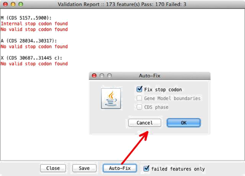
Some
of the errors can be fixed automatically. The 'Auto-Fix' button opens a window
with the fixes enabled that are available for the entry type that is loaded in
Artemis. For example, it will attempt to fix CDS features that have been found
not to end in stop codons. If the last codon is not a stop codon, but the very
next codon is a stop codon, then the end of the feature is extended by three
bases.
For GFF3 and Chado entries Artemis will also attempt to fix problems it
finds with gene boundaries and if a phase is absent then a default phase of 0
is given. Once these are fixed the results window will automatically update and
remove the problems it has managed to resolved.
Notes on Using The Mouse
Artemis
makes use of all three buttons of the mouse under X, but other windowing
systems often have less than three buttons. To make life easier when running
Artemis on those systems, there are some alternative key bindings.
On
Windows pressing the alt
or meta key and the first
mouse button will give the same effect as pressing mouse button three (usually
a pop-up menu). Pressing the control
key and the first mouse button will do the same thing as mouse button two.
On Macintosh systems
pressing the control
key and the mouse button will give the same effect as pressing mouse button
three (usually a pop-up menu). Pressing the alt
key and the mouse button will do the same thing as mouse button two.
Chapter 4. Project File Manager
Overview
The
Project File Manager can be used to facilitate the launching of groups of files
together. The project details are stored between sessions of Artemis, so that
it is straightforward to return to a project and open up all the relevant
files.
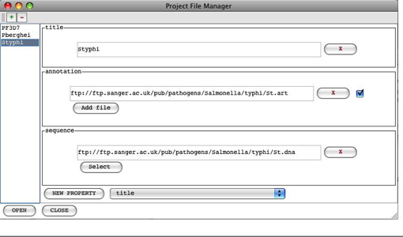
Using the Project File Manager
The
Project File Manager can be opened from the File menu in the Artemis
launch window (see the section called The Artemis Launch Window in
Chapter 2 ). It opens with some example projects in the list on the left hand side of
the panel. Selecting a project in the list shows the associated files in the
right hand side of the window.
To
add a new project click on the green '+' button at the top of the Project File
Manager window and enter a name for the project. The new project opens with a
blank form with a 'sequence' field. Note that each project has to
have an associated sequence file (e.g. FASTA, EMBL, GenBank or GFF) that
contains the nucleotide sequence for Artemis to open up. New files can be
added to the project by selecting the type of file from the drop down
list at the bottom and clicking the 'NEW PROPERTY' button.
The project list and details are saved between sessions when
Artemis is closed down. This information is stored in the home directory in a
file called '.artemis.project.properties'. When
Artemis is run it looks for a 'project.properties'
file in the local directory as well as for the '.artemis.project.properties'
file in the home directory.
Before
opening a project the files can be toggled on and off in the Project File
Manager so that each can optionally be deselected and not opened. Once a
project has been set up it can be selected from the list and clicking 'OPEN'
will open the main Artemis window.
To
remove a project from the list, select the project name and click the red '-'
button at the top of the window.
Chapter 5. Secure Shell (SSH) Plugin
To Artemis
Overview of the SSH Plugin
This
is a plug-in to Artemis that enables you to view and transfer files from a local
machine (e.g. PC/MacOSX/UNIX) to another remote file system (i.e. any other
file system that you have ssh access to). The main areas where this is useful are:
•
file management for both local and remote files. Files can
be transferred by dragging and droping between file
systems. Multiple files can be selected and transferred in this way.
•
launching Artemis and ACT with sequences and tab files from
files on the remote machines.
• running
BLAST and Fasta searches can be sent from the local
machine that is running Artemis and run on the remote machine. To do this the
software (BLAST and Fasta) need to be set up on the
remote side (see the section called Configuring Searches to be run via SSH ).
Login In
From
the Artemis launch window go to the 'File' menu and select 'Open SSH File
Manager'. A file manager window will then open with a local file manager at the
top. Underneath this is a remote file manager with a section to enter login
details.
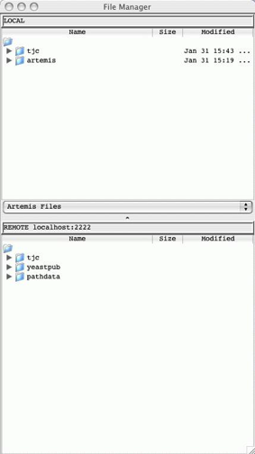
If
you can connect directly to the remote machine give the hostname, username and
password. Alternatively if you are using a SSH tunnel (see the section
called Setting
up a SSH tunnel )
then use localhost and the appropriate port number.
Setting up a SSH tunnel
The
tunneling capability of SSH Secure Shell allows
people to access their email, intraweb pages and
files securely even when working away from the office. This can be used with
Artemis and this section provides some examples of setting up tunnelling. It
may be necessary to consult your friendly system administrator about the
details on how best to do this.
On UNIX the ssh configuration can be set in the file ~/.ssh/config.
This contains the information to set up a tunnel that looks like this:
Host *.sanger.ac.uk
LocalForward
2222 machine.sanger.ac.uk:22
User tjc
Once
this configuration file is in place you can login from a UNIX window to set up
a tunnel.
On
Windows you can use Putty, see the section called Using Putty to Set
Up A Tunnel .
When the tunnel has
been established you can start artemis and enter
'localhost' into the Hostname field in the login window and the port number
(e.g. 2222 in the above example).
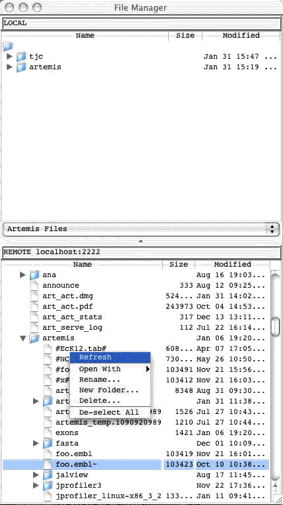
The
file manager can be used to drag and drop files between each file system. If
you right click on a selected file this will provide you with a pop-up menu
(see below) enabling you to delete, rename and open files.

Files on the remote
file system can be double clicked on and opened in Artemis (in the same way
they can be opened from the local file manager). Tab files can be read in by
dragging them from the remote file manager and dropping them into the Artemis
window.
Note
for ACT the sequence filename can be dragged from the file manager into the
file selection box (if the files are not found locally the are then located on
the server). The tab files in ACT can be dragged from the file manager and
dropped on the relevant sequence display.
When
files are saved, if the entry originated from the remote file system then this
is saved locally in the current working directory and to the remote file as
well.
Using Putty to Set Up A Tunnel
On
Windows you can use Putty to
set up a ssh tunnel. Below are settings that can be
used in Putty to set up a SSH tunnel.
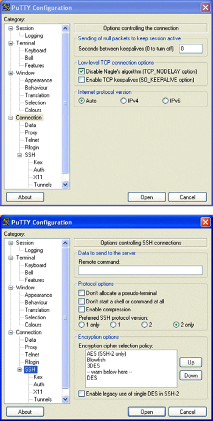
SSH
2 only is probably recommended here.
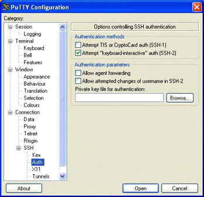
X11
forwarding is not necessary.
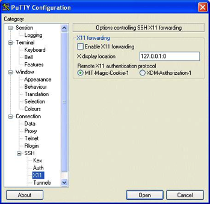
Set
the source port to 2222 and set the destination to hostname:port
(e.g. pcs2.internal.sanger.ac.uk:22).
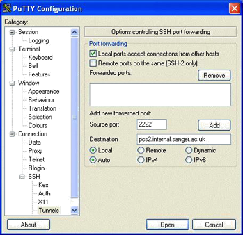
Click
'Add' to add this to the list of forwarded ports.
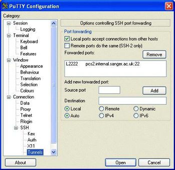
Run Artemis and
select the 'SSH File Manager' from the 'File' menu. At the bottom fill in login
details and click on the 'Connect' button. Logging in may take a minute
(depending on the connection).
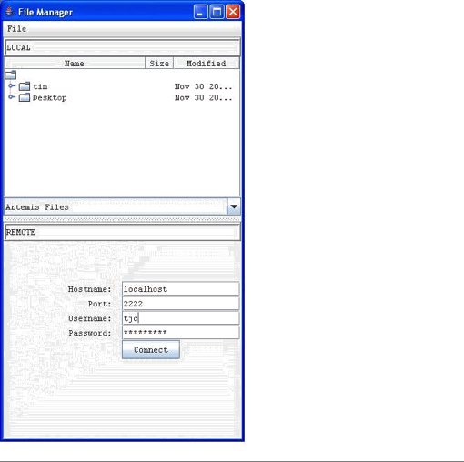
Using the SSH connection to run Fasta
and BLAST
Using the SSH
connection you can send Fasta and BLAST searches to
be run on the remote machine. If you have not already be prompted to login
(i.e. when opening up the SSH file manager), you will then be asked for your
login details. The sequence files that are to be searched against the database
are then sent to the remote machine. Once the search has finished the results
are transferred back afterwards. If Artemis detects that you have opened up an
entry from the remote file system the analysis will be run in the directory you
open the entry from. The results in this case are stored on both the local and
remote machines.
To
keep Fasta and BLAST searches on your local machine
and the remote file system in-sync:
•
copy any previously run fasta and
blast directories from the remote machine to your local file system. This can
be done by making a tar ball of the directory: e.g. creating a tar file of a 'fasta' directory
tar
cvf tar_ball_name.tar fasta
•
Then transfer this file to the local project directory and
extract with:
tar xvf tar_ball_name.tar
• when
launching Artemis, make sure you first change directory to the directory above
the 'fasta' directory that has been unpacked.
• open
the files from the remote file system in the file manager. It then knows where
to save it back to.
Configuring Searches to be run via
SSH
This
would most likely be done by a systems administrator. The databases and fasta and BLAST software need to be set up on the remote
machine. Once this is done the commands that are sent from the Artemis/ACT
client to the remote machine are controlled by a 'j2ssh.properties' file, see
below for example of this file. This needs to be put in the CLASSPATH for
Artemis/ACT or the one in the distribution (lib/j2ssh/j2ssh.properties)
modified.
The j2ssh.properties file also hold default information. For
example default parameters can be set for the login prompt, the working
directory (for searches when sequences are opened on the local side) and any
extra directories (other than the users home directory) to display in the file
manager.
#
#
# Configuration
file for using SSH file management and
# database
searches.
#
# Default
login options
#
port=2222
host=localhost
#
#
# Generic
default options
#
blastp=blastall -p blastp
blastx=blastall -p blastx
tblastx=blastall -p tblastx
blastn=blastall -p blastn
fasta=fasta33_t -B -S -q -b 100 -H -l /data/fasta/pubseqgbs
fastx=fastx33_t -B -S -q -b 40 -H -l /data/fasta/pubseqgbs
#
#
# Default working directory
wdir=/scratch
#
#
# Aliases used for fasta
%uniprot=%U
%uniprot_archaea=%A
%uniprot_bacteria=%B
%uniprot_eukaryota=%E
%uniprot_viruses=%V
%uniprot_rest=%R
%malaria=%M
%kineto_aa=%K
#
#
#
Remote directories to use as roots in the file manager
remotedir.PD=/nfs/pathdata
remotedir.YP=/nfs/disk222/yeastpub
#
Local directories to use as roots in the file manager
localdir.PD=/nfs/pathdata
localdir.YP=/nfs/disk222/yeastpub
Chapter 6. Artemis Configuration
Options
The Options File
When started on Artemis will
potentially look in 5 different places for files to examine for configuration
information. Artemis reads from the locations in order, so the user can
override the default options. Note that on Macintosh and Windows systems the
"current directory" mentioned below is the directory where the Artemis
application has been installed.
This is the search order:
• The
standard Artemis options are read first. On UNIX this file is in the file etc/options in the Artemis distribution
directory. Changing that file will change the options settings for all users.
On Macintosh and Windows system the standard options are stored in the Artemis
application itself and can't be changed (easily).
•
If the user has specified an options
file on the command line with the -options
argument, it will be read next. (UNIX only - see the section called UNIX Command Line
Arguments for Artemis in Chapter 2 for more).
• If
there is a file called diani.ini
in the current directory it will be read. This is for backwards compatibility.
• If
there is a file called options,
options.txt
or options.text
in the current directory it will be read.
•
If there is a file in the user's home directory called .artemis_options it will be read.
Artemis Option Descriptions
This section describes the possible
options for Artemis.
font_size
This option will set the font size
for all the Artemis windows. [default: 14]
font_name
This
option is used to choose the font for all the Artemis windows. The font must be
fixed-width. [default:
"Monospaced"]
base_plot_height
The
height (in pixels) of each of the base plots. [default: 150]
feature_plot_height
The
height (in pixels) of each of the feature plots. [default: 160]
draw_feature_borders
If set to yes, borders will be
drawn around each feature and each exon. if set to no, borders will only be
drawn around the selected features. This can also be set in the views popup
menu (see the section called Feature Borders in Chapter 3 ). [default:
"yes"]
show_forward_lines
If
set to yes, the forward frame lines are shown by default. This can also be set
in the views popup menu. [default: "yes"]
show_reverse_lines
If
set to yes, the reverse frame lines are shown by default. This can also be set
in the views popup menu. [default: "yes"]
draw_feature_arrows
If set to yes, a direction arrow
will be drawn around at the end of each feature. if set to no, no arrows will be
drawn. This can also be set in the views popup menu (see the section
called Feature
Arrows in Chapter 3). [default: "yes"]
overview_feature_labels
If
this option is no then the feature labels in the overview (see the section
called Overview
of the Entry Edit Window in Chapter 3 ) will be off at startup. [default:
"yes"]
overview_one_line_per_entry
If
this option is set yes then the overview (see the section called Overview of the
Entry Edit Window in Chapter 3) will start in one line per entry mode. [default:
"no"]
show_list
If
set to yes then the feature list (see the section called The Feature List in Chapter 3 ) will be shown on startup. [default: "yes"]
show_base_view
If set to yes then
the DNA base view (see the section called The Overview and DNA Views in Chapter 3 ) will be shown on startup. [default: "yes"]
features_on_frame_lines
If set to yes then
the "All Features On Frame Lines" option will be set to yes on startup. (See the section called All Features On Frame Lines in Chapter 3 ) [default: "no"]
frame_line_features
This
is a list of the feature keys that should be shown by default on the frame
lines. e.g.
frame_line_features
= \
CDS \
polypeptide
feature_labels
If
set to yes then the feature labels will be shown on startup.
(See the
section called All Features On Frame Lines in Chapter 3 ) [default: "yes"]
one_line_per_entry
If
set to yes then the "One Line Per Entry" option will be set to yes on
startup. (See the section called All
Features
On Frame Lines in Chapter 3 ) [default: "no"]
genetic_codes
This option gives
the list of names of the available genetic code tables. For each name in the
list there is a translation_table_NUMBER entry (see
below) where NUMBER is its location in the genetic_codes
list. Similarly the start codons are defined as start_codons_NUMBER
for each code.
translation_table_1
The
translation_table option is used to lookup codon
translations. The table must have exactly 64 entries, and there is one entry
for each codon.
The
entries should appear in this order:
TTT
TTC TTA TTG
TCT TCC ...
...
This
is the default setting for this option is the Standard Code:
translation_table_1 = \
f f l l \
s s s s \
y y * * \
c c * w \
\
l l l l \
p p p p \
h h q q \
r r r r \
\
i
i i m \
t t t t \
n n k k \
s s r r \
\
v v v v \
a a a a \
d d e e \
g g g g
The
other translation table entries are defined by giving the differences to the
Standard Code. These are given as the bases that make up the codon immediately
followed by the translation (e.g. atam, so that 'ata' codes for 'm').
extra_keys
This
contains a list of keys (separated by spaces) that are allowed in addition to
those specified by EMBL.
The
official EMBL keys are listed in the feature_keys file in the
Artemis code directory.
extra_qualifiers
This
contains a list of qualifiers (and their associated type) that are allowed in
addition to those specified by EMBL. The official EMBL qualifiers and qualifier
types are listed and described in the qualifier_types
file in the Artemis code directory.
common_keys
This is a list of
the keys that should be shown by default in the feature edit window. (see the section
called Selected Features in Editor in Chapter 3 ).
The
default setting for this option is:
common_keys
= \
allele
attenuator CDS conflict exon intron LTR misc_feature misc_RNA mRNA \ mutation polyA_signal
polyA_site promoter protein_bind
RBS repeat_region \ repeat_unit
rRNA scRNA snRNA source stem_loop
STS TATA_signal terminator \ tRNA
unsure variation -10_signal -35_signal CDS_motif gene
\ BLASTN_HIT CDS_BEFORE CDS_AFTER BLASTCDS
hyperlinks
This
is a list of databases and their URL's for Artemis to provide hyperlinks in the
Feature Editor (see the section called Selected Features in Editor in Chapter 3 ).
undo_levels
The
number of levels of undo to save or 0 to disable undo. More undo levels will
require more memory. [default: 20]
minimum_orf_size
This
option is used to set the minimum size (in amino acid residues) of a
"large" open reading frame, which controls which ORFS are marked by
the "Mark Open Reading Frames" menu item (see the section
called Mark Open Reading Frames ... in Chapter 3 ).
direct_edit
Set
the default value for the direct edit option. A value of "yes" will
turn direct edit on by default. See the section called Enable
Direct Editing in Chapter 2
feature_dna_programs
This is a list of
the possible external programs that can be run on the bases of a feature. Each
pair in the list is a program name and a default database to use for that
program. For each program name there must be a corresponding shell script
called "run_something". eg.
run_blastn. See the section called Configuring
the
Run Menu in Chapter 3 for more information.
feature_protein_programs
This
is a list of the possible external programs that can be run on the translation
of a feature. Each pair in the list is a program name and a default database to
use for that program. For each program name there must be a corresponding shell
script called "run_something". eg. run_blastp for blastp or run_fasta for fasta. See the section called Configuring the Run Menu
in Chapter 3
for more information.
ncbi_dna_search
This
lists the NCBI web-BLAST applications that the bases of a selected feature can
be sent to. See the section called The Run Menu in
Chapter 3 .
ncbi_protein_search
This
lists the NCBI web-BLAST applications that the translation of a selected
feature can be sent to. See the section called The Run Menu in Chapter 3 .
Setting Colours
The feature colours
(see the
section called Feature Colours in Chapter 1 )
used by Artemis can be changed using the options file. By default there are 18
possible colours (numbered 0 to 17), but any number can be used. The option
names for the colours are colour_0,
colour_1, etc. The
value of each of these qualifiers should be the three numbers separated by
spaces. The numbers correspond to red, green and blue respectively and each
number is an intensity from 0 to 255. As an example, to change colour 2 to
white put this line in the options file:
colour_2 = 255
255 255
Here is a list of the default colour
numbers:
0 white (RGB values: 255 255 255)
1 dark grey (RGB values: 100 100 100)
2 red (RGB values: 255 0 0)
3 green (RGB values: 0 255 0)
4 blue (RGB values: 0 0 255)
5 cyan (RGB values: 0 255 255)
6 magenta (RGB values: 255 0 255)
7 yellow (RGB values: 255 255 0)
8 pale green (RGB values: 152 251 152)
9 light sky blue (RGB values: 135 206 250)
10 orange (RGB values: 255 165 0)
11 brown (RGB values: 200 150 100)
12 pale pink (RGB values: 255 200 200)
13 light grey (RGB values: 170 170 170)
14 black (RGB values: 0 0 0)
15 mid red: (RGB values: 255 63 63)
16 light red (RGB values: 255 127 127)
17 pink (RGB values: 255 191 191)
Options For Plots and Graphs
Each
graph type has three option settings associated with it: the default minimum
window size, default maximum window size and the default window size. The
option names have the following form: [short_name]_default_min_window, [short_name]_default_max_window
and
[short_name]_default_window (respectively). [short_name] should
be replaced with the short
name of the graph. (The available short names are documented in the section
called The
Graph Menu in
Chapter 3 and the section called Feature Plots in Chapter 3 ).
As
an example the short name of the GC content graph is gc_content
so to set the initial minimum window size to 100, the maximum to 1000 and the
initial window size to 150 use these setting:
gc_content_default_min_window
= 100
gc_content_default_max_window
= 1000
gc_content_default_window_size
= 150
See also the section called Graphs and Plots in Chapter 3 .
Options For A Chado
Database
chado_exon_model
This is the feature key used when chado exons are joined and displayed in Artemis. For
example:
chado_exon_model=CDS
[default: "exon-model"]
This is the feature key used when chado transcripts are created in a gene model. [default:
"mRNA"]
chado_servers
This can be used to provide a list
of available databases. For example:
chado_servers
= \
test
localhost:5432/test?userName \
genedb_ro
db.genedb.org:5432/snapshot?genedb_ro
Options File Format
The option files it should contain
settings that look like this:
option_name
= option_value
If
the value of an options is too long to fit on one line it can be split over
several lines by ending each line with a backslash like this:
option_name
= option_value another_option_value
\
a_third_option_value
a_forth_option_value
An Example Options File
Here is an example options file:
#
this line is a
comment font_size = 14 minimum_orf_size
= 100
common_keys
= \
allele attenuator CDS conflict exon
intron LTR misc_feature misc_RNA
mRNA \ mutation polyA_signal polyA_site
promoter protein_bind RBS repeat_region
\ repeat_unit rRNA scRNA
snRNA source stem_loop STS TATA_signal
terminator \ tRNA unsure variation -10_signal
-35_signal CDS_motif gene